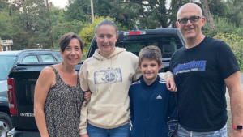

Latest Blog Content
Blogs
how living in la paz mexico is like living on an island
You know the saying, “Good things come to those who wait”? This best describes our first two months after moving from Oregon to La Paz. While we knew starting over in a new country would be an adjustment, we learned quickly how living in La Paz, Mexico is like living on an island. You need to learn how to be patient and wait, but eventually, good things will come your way.
first things first
Our family of four arrived in La Paz on July 28, 2021. The construction of our house was complete, but it still needed some basic necessities added before we could move in. We decided to rent a condo for the first five nights while we worked with our contractor to install air conditioning and kitchen appliances, and go furniture shopping. Southern Baja is a desert, and the temperatures in July and August hover around 100 degrees Fahrenheit, with anywhere from 70% to 90% humidity. It is not a place where newly relocated Oregonians can easily survive without air conditioning. It quickly became apparent that this was the most urgent item to install in the new house before we could move in.
not so fast
Our new contractor recommended a brand of mini-split air conditioners that were rated to be very energy efficient, which sounded very appealing as the electricity in Mexico is notoriously expensive. What he failed to mention prior to us agreeing to this brand was that he would need to order the units as they are not routinely carried in stores locally. He would be able to “borrow” two units from another customer’s house that was currently unoccupied, while the other four units would take 2-3 weeks to deliver. So we had one unit installed on the first floor and one on the second floor of our house. We were forced to keep all the bedroom doors open while we slept to share what little air conditioning we had upstairs at night, and this made it barely tolerable to sleep.
Our Introduction to Island Life
This was our first introduction to what we now refer to as “living on an island”. Baja is a peninsula, but people have explained that it’s more like living on an island. As Baja is a desert and mostly uninhabited, there is not a lot of manufacturing or industry on the peninsula. Almost everything has to be shipped in either from California or via cargo ship from mainland Mexico. After three more weeks of waiting, our other air conditioning units arrived and we now have very wonderful, energy-efficient cool air throughout our entire house.
Furniture Shopping, Easy, Right?
Our next experience with island life came when we tried to buy furniture for our house. A local furniture and design shop was recommended to us by the developers of our housing complex. The owner and designer was very responsive, quickly meeting with us at the house to see what furniture pieces we were looking for to fit the space. We then met with her at her “shop”, which was a very small space with a couple of staged rooms.
The designer had us look through furniture catalogs, and reported that some pieces were “in stock” and some would have to be ordered. We decided to make a concerted effort to only choose items she reported were in stock, so we could quickly furnish the house and move in. After choosing only the in-stock items for our house, she reported the items would be delivered on Wednesday. As this was a Sunday, we decided that was acceptable, and we would go buy mattresses and sleep on the floor for three days until the rest of the furniture arrived.
We Learn What "In Stock" Means
Tuesday afternoon, I contacted our designer to get a status check on our furniture delivery for the following day. She informed me that the delivery would not be tomorrow. When she said “Wednesday”, she meant the following Wednesday! She had failed to mention that “in stock” meant that the items were sitting in a warehouse in California, and they were being shipped all the way down Baja to La Paz! I quickly asked her for a refund of our money so we could go buy furniture locally from stores that actually had items “in stock”. She informed me that the import process had already begun, and we could not get our money back at this point. Needless to say, I was a bit cranky at this point. We resigned ourselves to sleeping on the floor for at least another week.
Rain In The Desert
And then, it rained. As I’ve previously mentioned, Baja is a desert. It averages only 5-7 inches of rain in an entire year. But when it does rain, it is often a torrential downpour. Two days before our furniture was scheduled to arrive from California, Southern Baja had a downpour the likes that the locals said hadn’t happened in at least five years. It was like the heavens opened up and a giant bathtub drained entirely in an hour. The infrastructure here is not built to handle that kind of rain, because it is so rare. Sewers overflow, roofs leak, and roads wash out. And our furniture was caught right in the middle of it, stuck in a truck, waiting for washed-out roads to be fixed for another three days.
The Furniture Arrives, Sort Of
Finally, the furniture arrived in trucks outside our house. We anxiously and excitedly awaited as we watched the workers unload, knowing that our two-week purgatory of floor sleeping was finally over. To our sinking disappointment, what they delivered was box after box of Ikea-type furniture that needed to be completely assembled. Desks, chairs, nightstands, bed frames, bunkbeds--none of it came preassembled. Defeated, we resigned ourselves to spending the next two days assembling furniture from instructions resembling hieroglyphs.
Furniture Bermuda Triangle
When we had finally assembled every last piece that was delivered, we noted that there was a handful of pieces missing. Our entire master bedroom set, our daughter’s nightstand, and end tables for the living room were missing. I quickly contacted our designer, with no response for an entire day. When she finally got back to me, she reported that an entire truck of furniture had mysteriously disappeared off the face of the earth. Her message sounded very sincerely distraught, as she mentioned that ours was not the only furniture on the truck, there was also a very expensive sectional couch missing for other clients. Her best guess was that the truck may have gone to mainland Mexico by mistake.
Needless to say, the missing truck was never found. And so, the store had to re-order the missing items, all the way from California once again! When the items finally arrived, my husband and I had been sleeping on our mattress on the floor for a total of four weeks. Our daughter’s nightstand never did materialize. By this time, I was so fed up with the designer and her company, I decided it wasn’t worth my time to inquire about the missing nightstand, even though we had already paid for it.
Try Before You Buy
This experience has also taught me that buying furniture from a catalog is not entirely practical. When we finally got our living room furniture assembled and arranged, the couches were smaller than I had expected and not particularly soft to sit on. In other words, they were not user-friendly for a family of four who might also occasionally host guests. So after all the waiting, we still had to order another couch to make our living room usable.
You Live, You Learn
When it was time to buy furniture for our second house which we will use as a rental for income, I decided to take what we had learned and try a different store. I went to an actual furniture store with a showroom. I was able to test out the couches and see them before I bought them. And I learned to ask where the furniture would be coming from (Guadalajara), and how long before delivery (two weeks). This time, the furniture arrived on time, almost entirely assembled, and with a one-year guarantee. One of the pieces arrived damaged, and the store sent a representative from Guadalajara to our house to look at the piece and approve its replacement at no cost to us. So in the end, I have found a wonderful furniture store with wonderful people I can count on.
Therefore, do a little bit of research if you are shopping for air conditioners, furniture, or other large items in La Paz, Mexico. Make sure to ask plenty of clarifying questions and know what you are agreeing to before you pay for anything. “In stock” does not necessarily mean in the store’s warehouse next door. We have learned that living on our Southern Baja “island” means being prepared to order and wait. And wait. And wait.
Growth Opportunities
The good news is this--while we wait and learn to navigate our new lives, we are living in our version of paradise, and we wouldn’t trade that for anything. With new experiences come new opportunities to learn and grow. Always try to take challenges in stride, knowing that things will work out the way they are meant to. Our first two months in La Paz have also taught us to have a sense of humor about things that really aren’t that serious in the big picture of life. Our new couch will come eventually and life will go on. You can choose to stress or you can choose to be happy and laugh about it. I choose the latter!
More Stories From La Paz
Want to hear more about our journey to La Paz or starting your own life reboot? You can subscribe to the Midlifing It community and receive a free copy of the "Life Reboot Worksheet" to get inspired and never miss when new content is posted. You can also read my post "Signs Your Life Needs a Reboot" if you aren't sure if you are ready to begin your life transformation.
How To Sleep Better In Midlife
Constantly feeling exhausted? Tired of waking up in the middle of the night and not being able to get back to sleep? Problems falling and staying asleep in midlife are real issues for a lot of people. While many of the causes of sleep problems in midlife are beyond your control, there are things you can do to set yourself up for sleep success. Keep reading to find out what might be causing your sleepless nights and how to sleep better in midlife.
You're Not Alone
According to a 2015 National Health Interview Survey, about 25 percent of middle-aged women have trouble falling and staying asleep four or more times per week. Fifty percent of women this age wake up feeling unrested four or more times per week. And while experts recommend at least seven to nine hours of sleep for women this age, more than 30 percent report getting less than seven hours of sleep most nights.
Men Have Trouble Sleeping Too
The statistics for middle-aged men aren’t much better. A randomized study of men aged 45-75 in Iran in 2011 found that 35 percent of study participants reported sleep disturbances. Problems reported include 17% who had trouble falling asleep, 13% reported frequent nighttime awakenings, and 13% reported waking up in the early morning hours and having problems falling asleep again.

What’s Causing My Sleep Problems?
You’ve likely already surmised that hormones play a big part in sleep issues. The decrease in estrogen and progesterone levels in perimenopausal women can cause hot flashes, mood changes, insomnia, and can even increase the likelihood of obstructive sleep apnea. Furthermore, it appears that sleep problems during this time are multifactoral. In addition to hormonal fluctuations, increased stress, greater caregiving burden, and mood disturbance can all lead to disrupted sleep for women.
Why Sleep Is So Important
More and more research is being done on how lack of sleep affects our health. In the short term, lack of sleep can lead to a decrease in alertness, concentration, relationship problems, impaired memory, and an overall decrease in life satisfaction. Long-term sleep deprivation can cause serious health problems, including high blood pressure, diabetes, heart disease, and stroke. Other problems include obesity, depression, impaired immunity, and lack of sex drive.
Sleep Deprivation and Drunk Driving
Lack of sleep can affect you much the same way as being intoxicated. Studies have shown that going too long without sleep impairs your driving the same way as drinking. Being awake for 18 hours straight impairs your driving the same way as a person with a blood-alcohol level of 0.05. And being awake 24 hours is equal to having a blood-alcohol level of 0.10%. A blood-alcohol level over 0.08% is considered legally drunk. This has even garnered the attention of the US Armed Forces. A study published in February 2021 titled “Study on Effects of Sleep Deprivation on Readiness of Members in the Armed Forces,” said sleep deprivation “may be the most important biological factor that determines service member health and combat readiness.”
How To Sleep Better In Midlife
Now that you know how vital sleep is to your overall health and well-being, it’s important to know ways to improve your sleep. The single most important way to improve your sleep is by creating and sticking to a nighttime sleep ritual. Many of us give little thought to how we prepare for bed. Our lives are so busy, we do housework or answer emails until we are exhausted and flop into bed. Or we watch television or scroll social media in bed. These things are keeping you from establishing a sleep ritual and contribute to your poor sleep quality. A consistent sleep routine triggers your brain to know when it’s time to get sleepy.
Work to Perfect Your Sleep Ritual
You should begin prepping for sleep in the afternoon by not consuming any caffeine after lunch. Then begin your sleep ritual one to two hours before your bedtime. Also, avoid screen time during this time. The blue light of televisions, computers, and smartphones suppresses the release of melatonin, your natural sleep hormone. Finally, turn the temperature down in your bedroom. Your body’s core temperature drops during sleep, so turning the temperature down will signal your body that it’s time to go to sleep.
Why Drinking Alcohol Before Bed Backfires
Avoid drinking alcohol close to bedtime. While alcohol may make you feel drowsy, it metabolizes quickly and can cause what doctors refer to as rebound alertness. Rebound alertness tends to hit in the second half of the night when you would normally be in your REM sleep. Alcohol is also a diuretic, so when it metabolizes quickly, it will create large amounts of urine, waking you up to go to the bathroom in the middle of the night.
The Importance of Consistency
As part of your sleep ritual, it is extremely important to have a consistent bedtime and wake time that you stick to even on the weekends. Staying up late and sleeping in on the weekends may sound like a way to regenerate, but it is counterproductive in that it can throw off your circadian rhythm. This will make it hard to get back into your sleep ritual during the week. Finally, you should also try turning your clock away from you at night. The blue light from an alarm clock can keep you awake, and seeing the time during the night can cause sleep anxiety.
Need Help Getting Started?
Want to learn more about living midlife on your terms? You can subscribe to the Midlifing It newsletter and receive a free copy of the “Life Reboot Worksheet” to help you keep focused and inspired. You can also read my post “The Best Tea For Your Health” if you want to learn more about optimizing your health in midlife.
How To Find And Keep Your Motivation In Midlife
Motivation can be hard to find and easy to lose again. I’m sure you have been in a space where you found yourself highly motivated and wished you could bottle up that feeling or make it last. I know I have. And during the low times, you wonder how to get that feeling back. This article will discuss some of the common motivation suckers and how to find and keep your motivation in midlife.
How Did I Lose My Motivation?
Have you ever gone to bed one night with great intentions to tackle the world head-on in the morning and have an ultra-productive day? Only, you wake up the next morning and find that somehow through the night, all your motivation magically disappeared? This happens to me at least once a month and it is so aggravating. It’s almost as if a monster came into my room while I am asleep and sucked all the motivation right out of me!
Menopause and Motivation
However, I have now figured out that there is no lack-of-motivation monster in my bedroom at night stealing my motivation. For starters, hormone levels during the month can be a huge factor in motivation. In perimenopausal and menopausal women, there is a decrease in estrogen levels which can lead to an increase in depression and anxiety. The same is true for men and decreasing testosterone levels as you age. These hormonal changes can also contribute to other changes in mood, such as brain fog and lack of motivation.
Hormonal changes and the accompanying mood swings can be exacerbated by insomnia. And unfortunately, hormonal changes themselves can lead to insomnia. This can be a vicious cycle. So, as you can see, during midlife we have a bit of an uphill battle when it comes to sleep, mood stability, and keeping ourselves motivated.
Setting Unrealistic Expectations
Setting unrealistic expectations for yourself can also cause you to lose motivation. If you have set unattainable goals for yourself, you will quickly lose the drive to continue your task. There can be a lot of pressure in midlife. Pressure to keep up with younger people at work and stay relevant in the job market. Pressure to make enough money to save for retirement while putting kids through college. Societal pressures to look a certain way in midlife and live a certain lifestyle. Unrealistic expectations make you want to give up before you’ve even started.

Time to Take Action
Now that we have identified some challenges to staying motivated, it’s time to make an action plan for how to find and keep your motivation in midlife. With some thoughtful preparation, you can take steps to reboot your motivation on any given day.
Be Clear About Your Purpose
If you are struggling to find your direction each day, you need to identify a clear purpose. However, if you wait for the beginning of a new day to declare your purpose, you risk the chance of waking up and finding the lack-of-motivation monster has struck again during your sleep. I prefer to reflect each evening, before going to sleep, on what my purpose is for the next day. In this way, you are finding your direction for the next day. You can even try this at the beginning of each week, but if your life varies greatly from one day to the next, this may be overwhelming and counterproductive in the beginning.
Create a List of Attainable Goals
Once you have identified a clear purpose for your day, next write down a list of attainable and measurable goals. And I mean it when I say attainable! You can always keep going if you find yourself reaching all your goals early in the day. But if you start with unrealistic expectations, you are setting yourself up for disaster, burnout, and frustration. For example, if your purpose for the day is to plan a summer vacation for your family, start with the attainable goal of picking the destination and mode of transportation. Notice I didn’t say scheduling or arranging the transportation. Just pick the mode, whether it be via car, boat, or plane. This should be a very attainable goal for one day. If you reach that goal early, you can always keep planning, but at least you will feel accomplished for the day.
Surround Yourself With The Right Tribe
Have you ever noticed that enthusiasm is contagious? If you surround yourself with positive, motivated people, you have a better chance of capturing that energy for yourself. Likewise, negative people will often want to keep you down at their level to have someone to commiserate with. Find people that can be positive mentors, that can touch base with you frequently. Listen to uplifting and motivating podcasts. Tune out the negative social media posts or better yet, unfollow or block them. There is no motivation to be found in negativity.
Stay Positive
Remember, don’t be too hard on yourself. There will be days when you don’t reach your goals, and that’s okay. If you are a Type A individual, this will be especially challenging for you. We tend to be very critical of ourselves. But beating yourself up for not achieving your goals is counterproductive and will only harm your motivation for the next day. Allow yourself the grace to understand that life is a journey and each day you are doing the best you can. You have control over how you think and how you react. Treat yourself kindly and love yourself.

Reward Yourself
Finally, a large part of keeping yourself motivated is having a reward to look forward to at the end of a completed task. Completing the task itself may be the reward, as in the previous vacation planning scenario where your reward is an amazing and relaxing trip. But completing the small day-to-day tasks can even deserve a small reward. Keep it fun and treat yourself. My favorite rewards at the end of a busy day can be a funny show on Netflix, a delicious glass of sauvignon blanc with notes of grapefruit, or a beautiful sunset stroll.
Put It Into Action
Finding and keeping your motivation can be tricky in midlife. With so many distractions, hormonal changes, and high expectations out there, it is easy to want to give up and hide under the covers. But with a little preparation and a few tools, you can have a clear action plan to help you succeed. While winging it may sound like a carefree and adventurous way to go about life, the truth is, most of us need an action plan to stay motivated. Find your purpose, create your goals, surround yourself with positivity, and have some fun! Your motivation is waiting.
Need Help Getting Started?
Do you still need help getting started? You can subscribe to the Midlifing It newsletter and receive a free copy of the “Life Reboot Worksheet” to help you keep focused and motivated. You can also read my post “Signs Your LIfe Needs a Reboot” if you are looking for even more motivation for your life.
Six Great Podcasts For Your Midlife Journey
If you haven’t been introduced to the wonderful world of podcasts, let me be the first to tell you, you’re missing out. There’s no better place to start than a podcast if you are looking for advice or new ideas. As I hit midlife, I find myself looking for all the advice I can get on navigating and making the most out of this transcendent time. With so many podcasts to choose from, you may be wondering where to start. In this article, I will discuss six great podcasts to help you get inspired and moving on your midlife journey.
What Is A Podcast?
There are podcasts on just about any subject you can think of. I have only been listening to podcasts for about a year myself, and I’m hooked. Podcasts are like watching a great documentary or interview on TV, only you are listening so you have your hands and eyes free to do other things. And podcasts are almost always completely free to listen to. You can listen while you are commuting, getting ready in the morning, winding down to go to sleep, or while exercising. The easiest way to listen to a podcast is via a listening app, such as Apple Podcasts, Google Play Music, or Spotify.
Messy Middle Road Trip

In the Messy Middle Road Trip, hosts Sandra and Nicole compare midlife to an epic road trip. “Behind us is a life full of joy, sorrow, responsibilities, and accomplishments. Ahead is a long empty road full of possibilities.” Their podcast is aimed at women over 40 who are navigating midlife fearlessly. Topics range from home tips and relationships, to business coaching for women, to self-improvement and health in midlife. The road trip theme is a fun way to set a mood that makes you feel like you are hanging with your girlfriends and having a great conversation while traveling forward in your life.
Midlife Mastery
Midlife Mastery with Broc Edwards is a relatively new podcast, but Broc is not new to podcasting. He is also the host of Imperfect Action, a podcast focusing on people who approach business on their terms. Midlife Mastery was created by Broc this past year. When he turned 50, he felt that there was a message in popular culture that “I should either be chasing the past glory days and clinging to my youth with a white knuckle death grip OR just quietly fading into the background”. He has a calm and approachable delivery as he talks with guests who are “bringing their passion, enthusiasm, and ambition to their next stage of life”. Many of his guests are leaders in their field who provide expertise and inspiration for tackling midlife issues. Broc also adds a layer of authenticity and relatability as he chronicles his own health and wellness journey at 50. And, shameless plug, Midlifing It will be a guest on a Midlife Mastery episode soon.
Midlife Mixtape
Midlife Mixtape started as a blog in 2011, and in 2017, writer Nancy Davis Kho began hosting its companion podcast. The hilariously descriptive tagline describes Midlife Mixtape as celebrating the time “between being hip and breaking one”. Nancy’s dry humor shines through as she interviews guests from Generation X with energy and wit. Her podcast won the Iris Award for Podcast of the Year in 2020. With an extensive guest list, Midlife Mixtape is sure to have something for everyone searching for some midlife humor and wisdom.
Experience 50
Mary Rogers started Experience 50 podcast in 2015 to help people navigate middle age. She has been the host of a morning talk radio show, “Mary in the Morning”, and a small business consultant and business owner. Mary also has a blog by the same name and offers consulting sessions. The podcast is devoted to exploring this new and uncharted time in people’s lives and helping them make sense of the middle-aged years. In her bio, Mary states that she is not a certified life coach or therapist, but she has plenty of wisdom to share in her episodes! Episode 243, entitled, “Mary Goes On Spring Break”, was posted in March 2021. Currently, Mary is taking a 3-month vacation for some self-exploration, and I certainly hope she will return soon with a rejuvenated soul and more wisdom for us.
Mastering Midlife
Mark J. Silverman is the man behind the wildly successful Mastering Midlife podcast. Mark is also an author and businessman who touts midlife as the most stressful, and most productive time of our lives. In Mastering Midlife, he has conversations with leaders in their field in an effort to help his listeners be the most successful version of their midlife self. Besides being a best selling author, Mark can also makes the rounds as a public speaker discussing leadership and productivity. If you are starting a new career in midlife or wanting to optimize your valuable time and energy, the Mastering Midlife podcast is a great place to begin. Finally, with over 300 episodes, it is an invaluable tool for helping you find greater success.
Fearlessly Facing Fifty
When Amy Schmidt was approaching 50, she had the same realization many of us have as we approach midlife. Where am I going? What is my identity? Amy recognized there is a lot of fear for women at this time in their lives. She started Fearlessly Facing Fifty to help women “go all-in on act two”. She wants to help women reclaim their identity and find their confidence again. Her warm and insightful podcasts help women feel surrounded by a tribe of people going through the same issues and coming out stronger. Amy also has a blog by the same name and a wonderful book about her journey called “Cannonball”.
With thousands of amazing podcasts in the world, this is only a small list to help inspire you and get you started. One of the best things I’ve found about listening to podcasts is hearing from people going through similar issues as me. It’s almost like having a support group in your ear that you can carry around and tap into when you need it. Podcasts can inspire, motivate, and educate. Try one out today and see what you might have been missing. Your empowered midlife is waiting, so use every tool at your disposal and reclaim it today!
Want more empowering content to help you navigate midlife? You can subscribe to the Midlifing It newsletter and receive a free copy of the “Life Reboot Worksheet” to help you start your journey. You can also read my post “Signs Your LIfe Needs a Reboot” if you aren’t sure if you are ready to begin your life transformation.
The Best Tea For Your Health
There’s nothing like a cold glass of iced tea in the summertime or a hot soothing cup of peppermint tea before bed on a chilly evening. But did you know the tea you’re drinking may also contain many health and longevity benefits? Tea has been used for medicinal purposes in many cultures for thousands of years. Scientists are now showing us many documented scientific reasons to make tea your new go-to beverage. From lowering your cholesterol, to fighting cancer, and aiding in weight loss, I will show you the best tea for your health.
Who Drank Tea First?
Tea was discovered in China around 2700 BC. It was mainly used for medicinal purposes until the late sixth century. In traditional Chinese Medicine, tea was considered the most beneficial herb and could be consumed daily. Later it was prized for its stimulant effect and for providing mental clarity. Tea made its way to Europe in the 18th Century, where it was originally drunk by the aristocracy in social circles. It wasn’t until the late 19th Century that it spread throughout Europe as a new daily custom embraced by all classes.
What's the Difference?
There are now so many widely available types of tea, it can be confusing to know how they are different from each other. A large number of teas, white, green, black, and oolong are part of the green tea family. The difference is in how long they are fermented and processed. They also differ in their caffeine content. Herbal teas contain no caffeine, while 8 ounces of green tea contains about 28 mg of caffeine compared to a cup of black tea which contains about 47 mg.
1. Green Tea
Green tea differs from black and oolong tea in that it is less processed. The minimal processing is thought to be why green tea is particularly high in nutrients and antioxidants. Tea contains compounds called polyphenols which are the antioxidants thought to play a role in preventing cell damage. Green tea is particularly high in polyphenols called catechins. Catechins are beneficial in fighting inflammation and chronic diseases like certain cancers, type 2 diabetes, and heart disease.
One study showed that people who drank six or more cups of green tea per day are found to have a 33 percent lower chance of developing type 2 diabetes. Another study found that people who drank 2 to 3 cups of green tea per day are 14 percent less likely to suffer a stroke. Green tea has also been shown to be an effective weight loss supplement. This is due to the caffeine and catechin in green tea. Catechin will help to break down excess fat, while both catechin and caffeine will increase the amount of energy the body uses therefore promoting weight loss.
2. Rooibos Tea
Rooibos tea, also known as red tea, is naturally decaffeinated. Therefore, it is a good alternative for people sensitive to caffeine. Like green tea, it is also high in polyphenols, particularly aspalathin. In animal studies, Aspalathin was shown to reduce insulin resistance and balance blood sugar levels in order to fight type 2 diabetes. It is also particularly high in flavonol. Flavonol supports the cardiovascular system by fighting inflammation and has a positive effect on blood fats such as cholesterol.
3. Black Tea
Black tea is one you are likely most familiar with. I love a good cup of Earl Gray on a cold winter morning. Black tea contains antioxidant flavonoids, which are also found in fruits, vegetables, red wine, and dark chocolate. The flavonoids in black tea may help reduce the risk of heart disease, high cholesterol, high blood pressure, and obesity. One study found that drinking black tea over a 12 week period decreased the participants’ triglyceride levels by 36%, reduced blood sugar levels by 18%, and lowered the HDL/LDL ratio by 17%.
With all the focus lately on the gut microbiome, you will be happy to learn that black tea may improve your gut health. Your gut contains millions of bacteria, some good and some not-so-good. Good bacteria play a role in reducing the risk of certain diseases, such as inflammatory bowel disease, type 2 diabetes, cancer, and obesity. The polyphenols in black tea promote the growth of good bacteria and inhibit the growth of bad bacteria in your gut. Black tea also has antimicrobial properties that will kill off harmful substances in your gut and improve immunity.
4. Jasmine Tea
Jasmine tea is made by adding jasmine blossoms to other teas, most commonly to green tea. When jasmine tea is mixed with green tea, it is loaded with catechins, a group of polyphenols that can prevent oral tooth decay by killing plaque-forming bacteria. It also may help improve your brain function. Jasmine tea contains the amino acid L-theanine, which triggers the release of the inhibitory neurotransmitter GABA, which puts you in a peaceful and contemplative state. Jasmine tea also smells divine, so it’s got that going for it as well!
5. Oolong Tea
Oolong tea is made from the same plant as green and black tea, but the leaves are processed differently. The tea-making process involves exposing the tea leaves to air, called oxidation, for varying amounts of time. While green tea is unoxidized and black tea is fully oxidized, oolong tea is right in the middle. Therefore it contains some of the antioxidant properties of both green and black teas. The polyphenols in oolong tea activate an enzyme that helps break down triglycerides in your blood. This can lower your cholesterol and help decrease your risk of stroke, heart attacks, and other heart diseases.
6. White Tea
White tea is the least processed. It gets its name from the fine white hairs on the buds of the tea plant that are picked before they are fully open. White tea is particularly high in antioxidants that help improve skin problems, such as acne, hyperpigmentation, and wrinkles. The anti-inflammatory properties of white tea’s antioxidants also help reduce redness and inflammation caused by skin issues such as eczema and dandruff.
White tea is also a powerhouse for cancer prevention. Antioxidants found in white tea can help build RNA and slow the mutation of genetic cells that turn into cancer cells. A 2010 study found that white tea was an even more potent cancer fighter than green tea. Researchers used white tea to target lung cancer cells in a lab and found dose-dependent cell death when white tea was added. This means that white tea may actually help stop the spread of cancer cells and may even kill the cancer cells.
With all this information, you can see that drinking a few cups of tea daily can contribute to a healthy and long life. In the Blue Zones of Longevity, the 5 areas of the world with the highest concentration of centenarians, or people over 100, people drink tea regularly in place of water. The only thing you have to lose is possibly some weight, heart disease risk, and cancer cells, so why not give it a try? The best teas for your health are the ones that you drink, so sit back, grab a cup and start sipping!
Want to learn more about finding empowerment and longevity in your second act? You can subscribe to the Midlifing It newsletter and receive a free copy of the “Life Reboot Worksheet” to help you start your journey. You can also read my post “Longevity Secrets of the Blue Zones” to learn more about improving your health and longevity.
Driving To La Paz, Mexico, The Trip Of A Lifetime
Those seeking adventure or a major life change from Canada or the United States often look south to our sunny neighbor, Mexico. The affordable cost of living, beautiful beaches, jungles, and mountains, and slower pace of life are a strong draw for many. When our family of four decided to take the plunge, we opted for driving from Oregon to Southern Baja and our new city of La Paz. The preparations and execution of driving to La Paz, Mexico are not for the faint of heart, but it certainly was the trip of a lifetime.
Planning the Move to La Paz, Mexico
When we decided to move our family permanently to La Paz, Mexico, we began planning in March 2021. We were planning for a move date in August of that year, to move our kids before the start of school. I started by joining some La Paz ex-pat Facebook groups to start researching how other people made their trips and look for advice.
Initially, the idea of making a 2000 mile drive with 2 adults, 2 kids, 2 dogs, and 1 cat did not sound appealing at all, therefore I was inclined to have us fly. But the more stories I read about flying with animals, the more nervous I became for our little dogs and cat on the airplane. After speaking with a friend who had driven to Southern Baja many times, and reading people’s experiences on Facebook, we opted to drive our truck down to La Paz with the few belongings we decided to move with.
Plotting a Route to La Paz
Using suggestions from the Facebook groups and Google maps, we decided that the best route would be to make the border crossing at Calexico, California, into Mexicali, Mexico. This appeared to be the shortest route, and I had read that the roads between Mexicali and La Paz had undergone some updates and were good roads. After saying some very tearful goodbyes to friends and family, we began our trip in earnest from the Willamette Valley of Oregon on July 25, 2021.
Getting Out of Dodge
We drove Interstate 5 out of Oregon, with our first stop in Woodland, California, just before Sacramento. The drive through Oregon to Sacramento was beautiful. Rugged peaks covered in Douglas Fir and pine trees dwarfed us as we passed over the Cascade-Siskyou mountains. More beauty met us as we descended down out of the Shasta-Trinity National Forest. Summer vacation season was in full bloom as families and their boats headed for Shasta Lake.
Once we passed Redding, California, we descended further to the fertile Sacramento Valley farmlands. As an Oregonian, it is easy to think of California only in terms of LA and Disneyland. I forget how much of California is devoted to beautiful farmlands. I found it very intriguing to drive past acres of pistachio and olive trees, as though I had never considered that these delectable morsels don’t just materialize from magic. A devoted farmer grows and tends to the crop so that I may nosh on an antipasto platter when I’m feeling fancy. Thank you California farmers for growing so much of our food!
Stopping For The First Night
Our first rest stop for the night was in Woodland, California. The Days Inn hotel I had booked was not fancy, but after eleven hours of traveling in a Ram pickup truck with 4 people and 3 animals, we would have been happy just about anywhere. Our truck had a soft cover over the cargo bed, so we opted to bring all of our bins and belongings inside each night for security reasons. This may seem like overkill, but the summer before this our close friends had their entire U-Haul truck stolen when they stopped at a hotel for the night while moving from Idaho to Oregon. So each night, my husband would dutifully pack every bin into the hotel room, and each morning he would skillfully put the whole puzzle back together in the back of the truck.
The Second Day
The second day took us out of the Sacramento farmlands and into a rather long, barren stretch of the drive that appeared to be mostly ranch lands. It was here that we witnessed years of damage from the California droughts. For about five hours of our drive that day, it was nothing but parched, sand-colored hills and pasture lands as far as the eye could see. It almost seemed post-apocalyptic, like something out of the movie “Mad Max: Fury Road”. It was both heartbreaking and scary at the same time to be a witness to the effects of climate change up close and personal.
We finally returned to the chaos of civilization when we hit Santa Clarita. It was here that our route had us head east, rather than continuing south along I-5 if we had chosen to cross the border at Tijuana. We merged onto I-210 to bypass Los Angeles. A few more highway changes and a few hours later, we found our way to Brawley, California for our second overnight stop of the trip. We stayed the night at a very nice Best Western in Brawley. Exhausted from another 10 hour travel day, we found an eclectic restaurant called Poke & Noodles with wonderful sushi and poke takeout to fill our weary travel bellies.
Crossing the Border to Mexico
The next morning we drove to the edge of Brawley and joined old highway 111 to the US-Mexico border at Calexico. We arrived at the Calexico West crossing around eight o’clock in the morning and parked our truck to go inside. There was no line, and only one border agent working. We were very grateful to learn he was bilingual as our Spanish still needs some work. We explained that we were moving to La Paz and had started the process for our Temporary Residency Visas. The agent took our passports and completed all the necessary paperwork for us! I’m not sure if he was just being helpful or if this is their normal process, but we were so thankful for this kind gentleman.
The whole process took only about ten minutes and we were off again with our Visas stamped in our passports. He even gave us helpful instructions regarding how long we had to complete the Visa process once we arrived in La Paz. He didn’t ask us anything about our belongings in the truck, or anything about our pets, as we had expected. After three months of anguish, research, list-making, veterinarian appointments, Consulate visits, and double-checking, the border crossing process turned out to be the easiest part of the trip!
Border Towns
After crossing the border, we drove through Mexicali. It is fascinating to go so quickly from one border town on the USA side to another on the Mexico side. I found it amazing to see the differences in the infrastructure and culture happen so quickly simply by passing over an imaginary line. Calexico had wide streets, large store parking lots, and sturdy powerlines we take for granted because they are an accepted and expected part of living in the United States.
It is hard to describe a Mexican border town unless you’ve seen a Mexican border town. It’s not right or wrong, it’s just different. The power lines are not tight and streamlined, with stray wires leading to nowhere. The paint on the cinderblock buildings can be wonderfully bright colors of pink, green, or blue, but often chipped and in disrepair. The stop signs are more of a suggestion than a law. And instantly upon crossing the border, all of the shop and store signs are in Spanish, of course. Border towns are a wonderfully intriguing and colorful introduction to the new country you’ve just entered.
The Third Day
The next nine hours of our journey were spent crisscrossing the dry, parched desert of Northern Baja. There were times we drove along the Sea of Cortez, with its stunning teal blue and aquamarine waters, that broke up the monotony. But in general, there was a whole lot of nothing but cacti and rocks. I had not strategically planned lunch stops along our trip, and that third day of traveling we had to skip lunch because there were no signs of restaurants for about four hours. We managed to find a small shop with chips, ice cream, and cold drinks to sustain us that day.
There were occasional military checkpoints along the way. At these checkpoints, we would stay in the truck and roll down the window. The guard would ask us where we were coming from, where we were going, and why. Finally, the guard would have my husband get out of the truck and open a bin or two in the back of the truck to inspect, and then let us pass with a smile and wave. The Google Translator app was our friend and helpful assistant for these checkpoints.
We Almost Lost the Cat
Our third and final night rest stop was in Guerrero Negro, just after crossing into Baja California Sur, or Southern Baja. Our hotel was very nice and clean. Fortunately, Guerrero Negro is on the Pacific Ocean side of the Peninsula, and so we had cooler Pacific Ocean breezes to help alleviate the fact that our hotel did not have air conditioning, an oversight by me when booking. Fortunately, our only true mishap of the trip happened that night when our cat quite skillfully figured out that the window screens in the room were not secured. He managed to push one open with his head, and my husband and I spent a very panicked half-hour looking for him. Fortunately, our cat is very food motivated, and with a shake of the food dish towards a dark corner of the hotel property, my husband produced one scared-looking, but unapologetic, pussy cat.
Welcome to La Paz
After Guerrero Negro, we crisscrossed Southern Baja a couple more times during our last nine-hour drive. It was another day of monotonous desert driving, with occasional stretches along the Sea of Cortez. Around 5:00 that evening, we crested over a final hill and were rewarded by a magnificent and glorious view of La Paz Bay and our new home city. As we drove down the hill towards La Paz, the mood in the truck became one of euphoria and glee! We put Phillip Phillip’s song “Home” on the truck stereo for an appropriate theme song. Even our chihuahua, Pancho, somehow sensed the excitement and rode with his paws on the dashboard as we drove through La Paz towards our new house.
Finally, after four days, three nights, 2000 miles, one cracked truck windshield, an almost lost cat, and lots of bathroom breaks later, we were home. Driving to La Paz, Mexico was the trip of a lifetime, but we can honestly say we’re not eager to repeat it anytime soon. It was a long drive in a truck with four people and three animals, but we persevered. We accomplished a lot of fun bonding as a family and I believe one day it will be remembered as a crazy and laugh-inducing experience to start our new lives in La Paz. We are rewriting our stories with this move. Life is meant to be lived, so be bold, take it by the reigns, and go out and live it. Rewrite your story and make it an adventure!
Want to learn more about reclaiming your midlife and rebooting your life? You can subscribe to the Midlifing It newsletter and receive a free copy of the “Life Reboot Worksheet” to help you keep focused and inspired. You can also read my post “Signs Your LIfe Needs a Reboot” if you aren’t sure if you are ready to begin your life transformation.
Benefits Of A Growth Mindset Vs Fixed Mindset In Midlife
Benefits Of A Growth Mindset Vs Fixed Mindset In Midlife I do not like the saying, “You can’t teach an old dog new tricks”. You most certainly can and should learn new things in midlife and beyond. However, sometimes the trick is finding the desire, energy, or a good reason to challenge yourself to learn something new. Understanding the benefits of a growth mindset vs. a fixed mindset in midlife can give you the motivation and courage to keep learning and evolving.
Carol Dweck’s Mindset
The theory of growth mindset and fixed mindset was described by psychologist Carol Dweck in her 2006 book, “Mindset: The New Psychology of Success”. Dr. Dweck is a Professor of Psychology at Stanford University and one of the world’s leading researchers on motivation, personality, and development.
Her book was the result of years researching school-age children and how they reacted to challenges in the classroom. Dr. Dweck observed that when some children encountered challenges or setbacks during learning, they viewed this as a personal threat to their self-image. Those children were more inclined to resist learning anything new and avoid any challenging situations that provided them with opportunities to grow and flourish. The other group of children had set specific learning goals. They sought out new opportunities and didn’t worry about failure. This group saw each mistake as a chance to learn and grow.
What Does Ability Mean To You?
Dr. Dweck used this and further research to form the hypothesis that “ability” means different things to different people. One group, she dubbed the Fixed Mindset. These individuals want to show off the ability they already have, feeling they are fixed, innate, or static in what they know. The other group she named Growth Mindset. These individuals believe that ability can be developed and is dynamic, ever-changing, learned, and cultivated.
Characteristics of a Fixed Mindset
Dr. Dweck describes fixed mindset people as believing “they have a certain amount of intelligence, and that’s that, and then their goal becomes to look smart all the time and never look dumb.” They believe they are born with all the intelligence and talents they will ever have and cannot develop more. They resist change, give up easily, and may feel threatened by other’s success around them. They view feedback as criticism. Therefore, they ignore any feedback because they do not believe they can change.
Drawbacks of a Fixed Mindset
Do you know someone with a fixed mindset? Or look even deeper, check yourself, and see if you may tend to have a fixed mindset. Do you resist change and tend to stick within your safety net or fixed pattern? I think all of us do to some extent because it’s a form of self-preservation. The danger in maintaining a solidly fixed mindset is that you may be missing out on many amazing opportunities and experiences. You are afraid to try and fail or go outside your comfort zone. This can limit career opportunities, life experiences, and overall life satisfaction. A fixed mindset can also damage relationships if you refuse to change your beliefs or ever admit any fault.
Benefits of a Growth Mindset
Growth mindset individuals believe that with failure comes growth. They are open to new opportunities and experiences to better themselves and experience the world around them. Growth mindset people are not limited by the unknown and focus on the process of learning rather than the outcome. They see criticism as an opportunity to learn rather than a personal insult.
Nurturing a Growth Mindset in Midlife
Midlife is the perfect time to nourish a growth mindset. It is easy to become complacent in your daily life because you may have settled into a comfortable routine. But science shows us that learning complex new things in midlife is important for slowing cognitive decline. A study published in Psychological Science examined a group of adults aged 60 to 90 who were divided into two learning groups. One group was taught new complex skills like digital photography or quilting, which require more long-term memory use and complex thinking. The other group was assigned a simple crossword puzzle to complete. After 3 months, the group in the complex learning group had a much larger overall memory improvement than the simple crossword task group.
Which One Do You Want To Be?
Hopefully, in midlife, you are finding some extra time to focus on yourself. Do you want to use that time to scroll through social media in your easy chair or start cultivating your growth mindset? What new things have you always wanted to try but fear of failure or being uncomfortable kept you from doing it? We must work on our internal dialogue to transform that fear into curiosity. Fear is limiting and closes off your world. Curiosity will bring you light, wonderment, and progress.
One of the benefits of midlife is finally feeling comfortable in your skin. You have found your confidence and don’t feel the need to prove anything to anyone else. Use this confidence to overcome the anxiety of learning something new. Don’t allow a fixed mindset to hold you back from amazing experiences, new cultures, a new career, or a positive relationship change. Be bold, be strong, and cultivate change and growth! There is a whole world of new opportunities waiting for you if you will allow yourself the chance.
Need Help Getting Started?
Want to know if it’s time to cultivate your growth mindset and learn a new job? Read my blog “Top 5 Reasons to Change Careers in Midlife” to see if now the time for a major life reboot. And subscribe to the Midlifing It newsletter to be alerted to new and empowering content.

Top 5 Reasons To Change Careers In Midlife
Midlife naturally lends itself to a reevaluation of where you are at in life. You start to realize you are at a halfway point and that can bring new fears, new hopes, or oftentimes both. For some people, you may find yourself reevaluating your job and career choice. If you find yourself wondering if now is the right time to make a change, I present to you the top 5 reasons to change careers in midlife.
1. You May Soon Be Outsourced By Technology
According to an article published in Forbes magazine, by 2025 automation will replace 85 million jobs worldwide. The article goes on to say that currently 30% of jobs are done by machines while 70% are done by humans. By 2025, the split will be more like 50/50. IBM makes an even more dire prediction by saying in the next 3 years, 120 million people around the planet will need retraining due to being replaced by artificial intelligence. Some of the careers predicted to be hit the hardest are manufacturing, assembly, customer service, fast food, bookkeeping, travel agents, and cashiers.
There is no way that this first reason feels good. You are a living, breathing, thinking human being. The thought of being expendable and being replaced by a machine or computer just plain stinks. But it is a reality that exists in some careers. It is better to be prepared and start looking towards the future than to stick your head in the sand and hope it doesn’t happen to you. Prepare yourself by researching if your career could be in jeopardy of being replaced and start retraining now rather than waiting for a pink slip.
2. You Are Looking For A New Challenge
Maybe you are one of the lucky ones who have rocked a successful career for years and love a new challenge. You feel like you’ve reached the top rung on the ladder and have no further place to climb. Then be bold, my friend, but also be smart. Perhaps there are more steps at your current job, and you should meet with your leadership to express your desire for new challenges. If there truly is nothing more for you, then I would suggest researching new career paths while still maintaining your current job. As someone who took a four-month mental health break once in my career, I can tell you it is easier to find a job when you don’t have the desperation of needing to find a job. Go back to school or start your own business. Nothing keeps you young like being a life-long learner!
3. You Have Lost Your Passion For Your Current Career
I believe this is very common in middle age. You may have been in the same career for 20 to 30 years, and have a hard time picturing yourself suffering through another 20. The average person will change careers 5-7 times in his or her lifetime. So, if you’ve been in the same career for more than a decade, then your flame has likely burned out and it’s time for a change.
Life is too short to spend your workdays at an unrewarding and unfulfilling job. It can be intimidating to think of changing careers and leaving the safety net of your comfort zone. And yet research tells us that people who suffer from chronic stress or anxiety are 20 times more likely to die over a ten-year period compared with people who don’t. Furthermore, a study in the Journal of the American Medical Association found that people over age 50 with low life-purpose indicators were twice as likely to die than those who report a greater sense of life purpose. So, by sticking with a job for which you have no passion or that is causing you chronic stress, you may be decreasing your life expectancy.
4. Lifestyle Changes Create New Opportunities
Midlife brings many life changes which can present the chance for new opportunities. If you are a parent, this is the time you are likely to find yourself with an empty nest. Without children at home to shuttle around and manage, you may have more time on your hands and want to put it to good use by working more. Conversely, if your children have successfully launched and you don’t require as high an income, you may be looking for a new career with fewer working hours. Either one is a good reason to look for a change.
Unfortunately, midlife may also bring about new health challenges for some that require lifestyle changes. The Covid-19 Pandemic forced many in the workforce to look for new opportunities to work from home. It also forced more companies to get creative in how they structure the workplace. Now might be the best time in recent history to look for a new career because employers are willing to rethink the traditional 9 to 5 and offer more flexibility.
5. You Want A Different Quality Of Life
Finally, you’ve been working hard for 20 to 30 years, you’ve raised your kids, you’re tired and you want a different quality of life. No one can blame you for that. Maybe your career has you working long hours and you want more sleep and a better work-life balance. Perhaps your career was very physically demanding and hard on your body and soul. Midlife is the chance to reclaim your life and finish strong by making it what you want. You have a lot of living left to do. Don’t sacrifice yourself by staying in a career that doesn’t help you get the most out of life.
Changing careers at any age can be intimidating. But it can also be one of the best decisions you make. Whether you are searching for a new challenge, a better quality of life, or simply a way to stay employed until retirement, you have the power and strength to make it happen. You didn’t get this far by being afraid and giving up. Why should your second act be any different? Be bold, grab life by the horns, and find the new career you’ve always dreamed of.
Need Help Getting Started?
Do you still need help getting started? You can subscribe to the Midlifing It community and receive a free copy of the “Life Reboot Worksheet” to help you keep focused and inspired. You can also read my post “Signs Your LIfe Needs a Reboot” if you aren’t sure if you are ready to begin your life transformation.
Journey To La Paz, Mexico, My Midlife Story
What would possess someone to leave a steady job as a registered nurse, sell or give away all her possessions, and start over in La Paz, Mexico? A person who’s decided it’s time to take back control of her life and live her second act on her terms. Join me as I share with you my journey to La Paz, Mexico, my midlife story. It’s a story filled with childhood adventures, unfulfilled dreams, and many years of searching for answers.
My Adventurous Childhood
I was born in 1978 and lived my entire childhood in Dallas, Oregon. Dallas is the quintessential small American town. The population during my childhood was around 9000 people. My mother was a registered nurse, and my father an electrician, and I have one older sister. We lived a very normal, small-town life until 1985 when my mother started volunteering with Medical Teams International, and our world suddenly expanded.
My mother would embark on medical missions 1-2 times per year, for anywhere from one week up to a month. It was from my mother that I learned my sense of adventure and that a strong woman can do anything she sets her mind to. When I was seven years old, my entire family went on a mission to Sudan for three months. After that, we accompanied my mother on a handful of other missions during my childhood, to Bolivia and Oaxaca, Mexico, and lastly to Vietnam in my early 20’s. These trips were my introduction to the intoxicating world of travel and our amazing global community.
The Dreams Of A Teenager
In my high school years, I began thinking of college. Naturally, I assumed I would become a nurse like my mother, and my sister, who had also become a nurse. It was while flying back from one of our mission trips that the passenger next to me began asking questions about my goals after high school. Relaying the story in a very unenthusiastic manner, the gentleman asked me earnestly, “Why do you want to become a nurse?” Deeply searching for an answer, I realized I honestly could not find one. It was just what I assumed I would do because it was an easy and safe decision.
This set me on an internal quest to figure out if there was something else I had more passion for. I didn’t have to search long before I realized that I wanted to go to film school. My childhood had been spent with an 8 mm camera in my hand, writing scripts, directing, and filming home movies with my girlfriends during sleepovers. I obsessed over filmmaking, learning about the styles of my favorite directors, and reading books on filmmaking and camera shots. In my senior year of high school, this small-town girl from Dallas, Oregon, applied with writing samples only, to New York University, Tisch School of the Arts, and got accepted into their film directing program.
Broken Dreams
Now clearly, somewhere between this and going to film school, the wheels fell off the bus. The school offered me a little bit of scholarship money, but I was still short around $25,000 per year for tuition. And while I believe my parents were proud of me for getting accepted to NYU, they were less than excited about their little girl going to school on the other side of the country for a career they viewed as less than stable. So, in the end, my parents would not co-sign on any student loans, essentially blocking me from my dream.
You must remember that this was 1996, when the internet was just becoming a thing in my small town. It wasn’t until the next year that I even got my first email address and dial-up internet service. There was no YouTube or Google to tell you how to do everything, so I didn’t know how to get to NYU on my own. I deferred my enrollment for one year, thinking I would work my minimum wage job at the mall and save $25,000 on my own. During that year, I became clinically depressed and gave up on my dream. I decided to go to nursing school like my mother and my sister had, because that was the safe and responsible thing to do.
Welcome to Adulting
I met my husband just before starting nursing school, we got married and moved to Portland. I graduated from nursing school seven months pregnant with our first son. My husband started his first teaching job, I started my first nursing job, and we were off to live the American Dream. Fast forward seven years, and we now had three kids, I was working full time as a mother/baby nurse, and I was exhausted. I believe it was around that time that I started wondering where my life was going and if this was all there was in life.
We moved again for my husband’s work to Junction City, Oregon in 2012. I was already desperately trying to find a way out of the nursing profession. I quit my job for a brief four-month period to start an in-home daycare business. But as the savings dwindled, I went back to work as a nurse. It was that year that I went through another clinical depression. I was in a new town without any friends, working a job that was unfulfilling, and feeling trapped.
The Darkness of Depression
I’ve been asked before how you know if you’re clinically depressed versus just kind of blue. For me, it was that feeling that you didn’t care if a bus hit you on the way home, or if you just didn’t wake up the next day. I felt like there was a dark veil covering everything, keeping me from seeing the light. There were times I knew I should get up and do things, but I couldn’t make myself do it and didn’t want to. I wasn’t suicidal per se, because as a nurse I was much too practical to have to deal with the embarrassment of a failed attempt if poorly executed. But I also wasn’t opposed to some outside force taking care of the job for me. That was how my clinical depression felt.
My husband eventually convinced me to ask my doctor for help, and I went on antidepressants and got better. But the trapped feeling, the feeling of desperation from being stuck in a career I didn’t want would not go away. In the past ten years, I’ve tried to scheme my way into a different career many times because of this desperation. I just wanted something to call my own, that was my own creation and choice.
Our Travels to Mexico Begin
During that time, my family and I also started taking yearly vacations to Mexico. I had decided that if I had to work full time as a nurse, I might as well put some of that money to good use and travel. Mexico was the obvious choice because I had fallen in love with the country and its people as a child while traveling on mission trips. We went to Puerto Vallarta, Puerto Morelos, and La Paz. When we went to La Paz for the first time in 2018, we fell in love with the city. We loved the family atmosphere, loved that it wasn’t as touristy as Vallarta, and the water and beaches in the Sea of Cortez are unparalleled.
My husband and I had begun talking about if we could financially afford to retire sooner rather than later. We had been working on paying off all our debt and we were down to only our house payment. We had hopes that we could retire when my husband had finished his thirty years of teaching when he would be 58 and I would be 52. Even with that plan, I still had at least ten more years of working in nursing, which at times seemed suffocating.
Deciding to Reboot
And then Covid-19 hit, and the world shut down. I continued going to work at the hospital every day, and my husband started teaching remotely from home. But the kid activities, social gatherings, and everything else stopped. My husband is also a wrestling coach, so for the first time in over twenty years, he was able to take a step away from coaching. He realized he was as burned out on teaching and coaching as I was on being a nurse.
When you have a lot more time on your hands, you have a lot more time to think. Some people found this part of the Pandemic lockdown to be intolerable, but for my husband and me, it was a lifesaver. We had time to really reevaluate where we were and where we were going. We started looking at our core values and wondering how our life was either supporting or distancing us from those values. I began doing research on happiness and longevity. We came to the epiphany that we were completely done with our current life situation. Ready to completely overhaul our lives, we embarked on a journey to create a new life that fed our souls and was in line with our core values.
We decided the hamster wheel of our American lifestyle was not healthy for us. The pace of life, the cost of living, the stress was all just too much. We didn’t eat right, didn’t exercise enough, my husband didn’t get enough sleep, and our work was stressful and no longer fulfilling. We wanted to live in a warmer climate, which we felt would promote a healthier lifestyle. And we both desperately wanted to change careers and take back control of our lives.
Making an Escape Plan
That first summer of Covid-19, 2020, we decided to buy an investment home in our favorite city of La Paz. We would rent it out as an Airbnb, use it for our own vacations, and then snowbird there when we retired. We contacted a realtor and bought a home that would be built and finished in the Summer of 2021. But as we talked more about how our current lives were not supporting our health and happiness, our plan began a metamorphosis. I am a person who geeks out on research and planning, so I began online research about how to move to Mexico and become ex-pats. This also included figuring out how to create careers and make a living online.
After a lot of research, I asked my husband if he would be interested in moving to La Paz after our daughter graduated from high school in 2023, and he quickly jumped on board. I decided to start a blogging website to share all the information I had been learning about happiness, empowerment, and longevity. My husband built my website, and I named it “Midlifing It”, to reflect this time in midlife when you are at a crossroads and can choose a different path. And I finally realized my passion in the process. It wasn’t my film samples that got me accepted to NYU’s film school all those years ago, it was my writing! I have rekindled my love for writing and found out what feeds my soul.
In March of this year, we went to visit our new home in La Paz to check on the progress, and my daughter and 10-year son said they wanted to move as soon as possible without waiting two more years. My husband has found a new passion in graphic design and has started his own t-shirt and sporting apparel design website, www.wrestlinggraphics.com. And so, just like that, we gave our notices at our current jobs and will move to La Paz in August 2021.
Reclaiming My Life and Finding Empowerment
We still have a lot of planning and work to do. It has been a grueling three months of working my full-time job, trying to figure out how to move our lives to Mexico, work on my website and social media presence, and get our house ready to sell. But it has empowered me so much to know that I am strong and capable of anything I put my mind to. I am slowly learning how to expand my website and make an income from it, which is no easy task, but I love it! When I am writing a new blog post, my heart is happy. I am finally creating and sharing my passion with others.
Helping You Midlife It Your Way
That’s why I created Midlifing It. I want to share with others that you don’t have to be stuck. Too many times we feel like we don’t have control of our lives or like we must settle because things will get better later. But what if later never comes? I worked with a person who was a few months from retirement, and she died at home alone before fulfilling her retirement dream. Later never came for her. I hear people every day complaining that they never have enough time, or they aren’t happy with their situation. I want to show you that the power to change is within each of you! You must believe that you deserve better and not wait until later to make the decision to change your life.
Life is short, my friends. If you are reading this and you are in midlife, then you are already at the halfway point. And if you aren’t quite in midlife yet, you have even more time to change your life. What do you want to do with your second act? Take back control of your life and stop running on the hamster wheel to nowhere. Do some introspection to remember your core values and create the life you dream of. You have a lot more life and living to do. Join me and create the life you deserve. My Midlifing It story isn’t over yet, and in fact, it’s just beginning! Come join me!
How Decluttering Your Life Can Help You Reclaim Your Happiness
How Decluttering Your Life Can Help You Reclaim Your Happiness. Do you own your stuff or does your stuff own you? Did you know that the things you accumulate can be causing you stress and decreasing your life satisfaction? While you may feel a momentary rush of adrenaline from a new purchase or by adding to your collection, these items may not be serving you in the long run. This article will discuss why we accumulate excess possessions and how decluttering your life can help you reclaim your happiness.
Consumer Culture
Decluttering, minimalizing, organizing, whatever you want to call it, we have a hard time letting of our stuff. Even harder can be resisting the urge to buy and accumulate more things in the first place. We are a consumer culture, driven by the need to have the newest, best, or biggest new gadget. But after a day or a week, we find ourselves bored with the last item and looking for the next shiny object that catches our eye. Advertisements pray on our insecurities and our fear of scarcity to get us to buy their products.
Do Your Possessions Serve You?
Therefore, the question we should be asking ourselves is, how is this object serving me, and is it contributing to my peace of mind and true happiness? Why do you give so much meaning to material possessions? Try to be honest with yourself and get to the root of why you over-consume. Are these possessions important in life? Research shows us that people who spend money on experiences are happier than those who spend it on material possessions. And yet we know that in 2018, Americans left 768 million vacation days unused.
The Minimalism Movement
There is a whole movement called Minimalism that seeks to tackle this very issue. Minimalism is a way to live a more deliberate and purpose-filled life in which you get rid of possessions that are in excess and not serving you. The goal is to find happiness in living and experiencing life, not through things. The over-consumption and accumulation of possessions clutter up our homes, our lives, and is a placebo keeping us from feeling true happiness.
Why We Collect So Much
To begin the journey of decluttering the possessions that no longer add to your happiness, you first must get to the root of why you collect and purchase so many things. Ask yourself why you give so much meaning to material possessions. Are these possessions important in life? If your house burned down tomorrow and you lost all your possessions, but your family survived, it would quickly become evident what matters in your life and what doesn’t.
However, it’s not as simple as saying everyone is a shopping addict. Some people grow up poor and must do without, and it now feels good to be able to buy things and treat themselves. For others, they may be trying to numb the pain of a life trauma by accumulating new items as a distraction. And for many of us, there is a fear of missing out if we don’t buy the shiny new object our friends or television are telling us about.
Why Can't I Let Go?
Next, you need to figure out why you have a hard time letting go of excess. Again, this could be rooted in a childhood where you lacked basic needs, so you keep items around now “just in case”. Or you tend to attach overly sentimental value to items and have a hard time letting go. Finally, some people are simply “collectors” and can’t part with anything in their collection.
Decluttering Your Life To Regain Your Happiness
Now that you’ve come to terms with why you collect and have a hard time letting go, it’s time to begin decluttering your stuff and your life. I’d like to tell you there is a magic formula for you to follow, but it really must be your process and your decision. The following are some tips that may be useful.
1. Does This Item Add Quality to My Life?
If you struggle with overconsumption, then before you purchase an item ask yourself if the item will truly add quality and happiness to your life. Waiting twenty-four hours before making a purchase can be helpful. If you still believe the next day that the item will truly add value to your life, then purchase it. I find that after twenty-four hours I’ve usually come to my senses and realize I don’t need the item after all. You can also use the one-in-one-out rule. If you buy or receive a new item as a gift, donate a similar item from your collection to charity.
2. No More Just In Cases
You can apply this same process as you go through your possessions at home. I have a rule that if I haven’t used an item in one year, or a whole cycle of seasons, then I do not need the item. If you think about it, the items you really need in your life are the ones you use on a day-to-day basis. Those are the items that add value to your life. The ten extra coffee mugs you keep “for when company comes over”, or the sequined dress you are keeping “just in case I get invited to a party” are not adding value to your life. Finally, the phrase “just in case” should be a big red flag in general and you should donate anything you are keeping for that reason.
A Life With Less Stress
As you declutter your possessions and learn to keep only those things that add value or happiness to your life, you will begin to find more enjoyment in daily life. If you’ve only kept items that truly bring you joy or add value to your life, then your daily routine should be that much more enjoyable. You will notice a decrease in your stress level when you aren’t surrounded by so much stuff. It will be easier to unwind because your environment will be more peaceful.
Go Out and Experience Life
We all desire a more peaceful and happy existence. Unfortunately, too often we look to possessions to bring us this happiness, rather than looking to each other and creating life experiences. If you can overcome your need to buy and keep an overabundance of items you don’t need, you will reclaim your freedom from those possessions. Take back your life and don’t let your stuff own you. Own your life and go out and experience it! Use your vacation days and create memories that will last long after your stuff is gone.
If you would like to read more empowering content on taking back your life, subscribe to the Midlifing It community today and be alerted when new content is added. And if you want to learn more about how to live life more on your terms, read my blog “Living an Authentic Life by Finding Your True Self”.
The Best Sources Of Plant-Based Protein
Plant-based eating is becoming more popular and mainstream for good reason. Plant-based diets are being recognized as among the healthiest diets for fighting heart disease, diabetes, certain types of cancer, and promoting longevity. While people may want to add more plant-based meals to their diet, many are unsure of how a plant-based diet can provide enough protein to sustain energy and muscle growth. In the following article, I will provide an introduction the some of the best sources of plant-based protein and how to incorporate them into your healthy lifestyle.
All Plants Contain Protein
Many people wonder how plants can provide enough protein to sustain them. But the good news is that all plants contain protein. A well-rounded plant-based diet can easily provide more than enough protein for a person to grow, gain muscle, and flourish! There are now many documentary movies including “The Game Changers” and “From the Ground Up” that shed light on the myth that athletes cannot survive on plant-based diets. The trick is filling your plate with plenty of whole grains, beautiful fruits and vegetables, potatoes, and legumes. Here are some of my favorite plant-based sources of protein.
1. Legumes
I am obsessed with beans! To me, they are the perfect food. They are inexpensive, an amazing source of fiber, and so versatile. They also are a secret weapon for achieving longevity! A 2004 study of people 70 years or older in three different cultures around the world found that for every two tablespoons of beans a person ate each day, they reduced their risk of dying by 8%! Fart jokes aside, beans will become your new best friend.
Lentils provide a whopping 18 grams of protein per cup, black beans 14 grams per cup, and chickpeas contain 11 grams per cup. And if you are worried about all that embarrassing gas, the trick to cooking beans is to soak them for at least 8 to 12 hours and then change the water prior to cooking. Soaking the beans releases some of the hard-to-digest sugars that can cause uncomfortable gas and bloat. I like to cook a big batch of beans each weekend to use throughout the week. First I soak my beans overnight, then swap the soaking water for freshwater. Next, I cook them either on the stove or in an instant pot, and then freeze them and take out what I need each day. We use beans as a meat replacement in spaghetti, tacos and burritos, salads, soups, and just about anything! Similarly, lentils are extremely versatile and provide a wonderful meat substitute for spaghetti Bolognese, meatloaf, or burgers.
2. Tofu
Tofu can be a very mysterious and misunderstood food, but once you learn how to prepare and cook it, you will wonder where it’s been all your life! Just 3 ounces of tofu contains 8 grams of complete protein. And soybeans are a natural source of polyphenols, a type of antioxidant that may help protect your body against cell damage and conditions like heart disease.
Tofu is sold in different degrees of firmness, from silken to extra firm. Silken tofu can be used in smoothies and sauces, while firm and extra firm are generally used for frying or baking.
Tofu is like a sponge, so the trick to cooking it is to first remove the water by pressing it so it can absorb the flavors of the marinade or sauces you are using. I use firm or extra firm tofu, press it in a tofu press for at least 30 minutes, and then dice it up into one-inch chunks and marinate it prior to cooking it. I will make a simple marinade using 4 tablespoons of soy sauce, 2 tablespoons of real maple syrup, 2 tablespoons of rice vinegar, 1 teaspoon of sesame oil, one diced garlic clove, and ½ teaspoon of dried ginger. Next, I will either fry the tofu in a pan until brown or bake it at 350 degrees for 30 minutes. Toss it with some noodles or rice, and your favorite stirfry vegetables and you have a filling and healthy meal.
3. Tempeh
Tempeh is made from cooking fermented soybeans and forming it into slabs much like tofu. It may contain other beans, grains, and flavorings. Tempeh is a protein powerhouse, containing 17 grams of protein per ½ cup. While the idea of eating fermented soybeans may not sound appealing, I can assure you it doesn’t taste fermented. In fact, many people describe tempeh as having a “nutty” flavor. And much like tofu, tempeh takes on much of the flavor of what you cook it in. You can marinate it, fry it, or bake it. It works particularly well sliced into sandwiches or tacos. I like to slice it thin, baste the tempeh in BBQ sauce, sauté it in a pan, and then make BBQ tempeh sandwiches.
4. Grains
There are many whole grains that are very versatile and packed with protein. Quinoa is a superfood that is a complete protein source, gluten-free, and rich in magnesium, iron, and fiber. It has 8 grams of protein per cooked cup. Amaranth is like quinoa in that it’s gluten-free, a complete protein source, and packed with around 9 grams of protein per cooked cup.
When reaching for rice, consider changing to brown or wild rice. Brown rice is high in fiber, magnesium, and zinc, and has 4.5 grams of protein per cooked cup. Add a few beans and you have a complete protein! Even better, reach for wild rice which has 9 grams of protein per cooked cup, and is loaded with fiber and iron.
And for breakfast, reach for a hearty bowl of oats. Cook them or use them to make overnight oats. One cup of cooked oats has 6 grams of protein, is an excellent source of fiber and complex carbohydrates, iron, zinc, and magnesium. And pure oats are gluten-free if you struggle with celiac disease or gluten sensitivity. I like to make a breakfast of ½ cup of oats, 1 tablespoon of chia seeds, 2 tablespoons of ground flaxseed, 1 tablespoon of pumpkin seeds, a dash of cinnamon, and blueberries. Next, I add some water and heat the whole mix up in the microwave, then add hemp milk, stir, and finally enjoy as a hot protein and fiber-filled breakfast!
5. Seitan
Seitan is a plant-based protein source made from wheat gluten, and when cooked mimics the look and texture of meat. It contains an amazing 25 grams of protein per 3.5 ounces! You can find it in the refrigerated section of health food stores or make it yourself at home. Seitan can be pan-fried, baked, and even grilled. You can baste it with sauces or mix in flavorings when making it yourself at home. This source of plant-based protein is not recommended for people with gluten sensitivities.
6. Potatoes
Potatoes often get a bad rap for being a high-carb bad guy. But if you prepare the whole potato with the skin on it, they are truly a nutritional powerhouse. One large baked potato has 8 grams of protein and is high in potassium and vitamin C, high in fiber and antioxidants.
Potatoes contain a starch called resistant starch. Research has linked resistant starch to many health benefits, including reducing insulin resistance, which in turn, improves blood sugar control. Also, when resistant starch reaches your stomach, it becomes food for your beneficial gut bacteria. In my house, we like to create a baked potato bar dinner. We stuff our baked potatoes with beans, salsa, sautéed vegetables, and just about anything! Super nutritious and filling.
7. Vegetables
As I mentioned previously, all plants contain protein so I would be remiss if I didn’t discuss how much protein you can get just from loading up on your vegetables. A single, medium stalk of broccoli contains 4 grams of protein. A cup of cooked spinach has 5 grams of protein and a cup of cooked brussels sprouts has 5.6 grams. So, you are not only getting amazing vitamins, fiber, and antioxidants from your vegetables, you are getting a low-calorie protein source as well. Combine your vegetables with other plant-based sources of protein such as quinoa and beans, and you can see how you can easily make a healthy meal full of more than enough protein to sustain your workout or workday.
Health and Wellness Are Not Obtained Overnight
As you can see, there are many amazing options for plant-based protein sources. This list only scratches the surface. Obtaining health and wellness is a journey, it is not obtained overnight. If you can add more options and variety to your health and nutrition journey, it will only make it more pleasurable, successful, and maintainable.
I hope this information helps to broaden your options when you are thinking of how to create a sustainable eating plan and lifestyle. And remember, the longest-lived people on the planet consume diets that are 95-100% plant-based, so they appear to be on the track of a very successful and healthy lifestyle! Try swapping out some of these plant-based protein sources in your weekly meal plan and see where it takes you. Who knows, it might take you past a century!
Want to learn more about plant-based lifestyles but don’t know where to start? Read my blog, “Benefits of a Whole Food, Plant-Based Lifestyle”, and subscribe to the Midlifing It community to learn more about finding empowerment and longevity in your second act!
An Introduction To The Five Love Languages
Ever feel like you and your significant other are speaking totally different languages? Perhaps it’s because you are, and you have very different love languages! In this article, I will share an introduction to the Five Love Languages. Understanding these love languages can not only be beneficial in your romantic relationships but also improve your friendships and family life.
What Are the Five Love Languages?
The 5 Love Languages were conceived by best-selling author and Ph.D., Dr. Gary Chapman. During his time as a marriage counselor, he began noticing couples voicing they felt unloved by their partners because they weren’t getting their needs met. After reviewing years of case notes, Dr. Chapman noticed that people’s needs generally fell into five categories.
The concept of the 5 Love Languages is that different people have diverse personalities and express love in five diverse ways. Generally, each person has one language that they prefer to receive love in.
1. Physical Touch
This one should be self-explanatory. A person whose love language is physical touch prefers nonverbal acts of affection, such as hugs, touch, kisses, or physical closeness. They want physical affection frequently and without having to request it. It can be something as simple as a hand on their shoulder or holding hands.
2. Receiving Gifts
This group prefers thoughtful gifts or gestures frequently to let them know their partner is thinking about them. For them, these gifts tell the person they are a priority in the other person’s life.
3. Words of Affirmation
This group of people prefers kind words of encouragement or acknowledgment of their efforts and talents. They appreciate a simple note or text letting them know they are being thought about. They want their partner to be an active and encouraging listener.
4. Acts of Service

People who prefer acts of service appreciate partners who do things to alleviate their stress, such as chores around the house without being asked. This group wants a partner who will work side by side to lighten their load and make them feel listened to.
5. Quality Time
Quality time to this group means your undivided attention, without distractions of cell phones or kids interrupting. They appreciate a date night, a weekend getaway, or even a distraction-free conversation in the evenings.
Two Different Love Languages
As you can imagine, problems arise when two people speak entirely different love languages. For example, if your love language is Acts of Service, you are expecting your partner to spend time helping you with housework, helping the kids do their homework while you take a bath, or taking out the garbage without being asked. However, if your partner’s love language is Receiving Gifts, they may bring you a bouquet of flowers and not understand how you can be irritated that the sink is full of dishes. Do you see the problem here?
My Love Language Struggles
My husband and I have learned that we speak two very different love languages. His language is Physical Touch, while mine is Quality Time, followed extremely closely by Acts of Service. It took us almost 20 years together before we learned about the Love Languages and had our “Aha” moment. For me, if I feel disconnected from my husband because we’ve been too busy to spend quality time together, I don’t feel very much like giving him physical touch. But my husband feels like everything is okay in our relationship, especially when things are hectic when he is receiving or giving physical touch. You can see how this can spiral into misunderstandings, resentment, and hurt feelings.
Respect Your Partner's Love Language
We have had to learn how to respect each other’s love language and provide it for our partner, even if it doesn’t come very naturally for us. We do this to show each other we are important to one another, and we want to make our partner feel loved and acknowledged. And if our love language needs are being met, our marriage runs much more smoothly.

Love Languages are Helpful in Other Relationships
Understanding the 5 Love Languages can also be helpful in other relationships, such as close family and friends. I firmly believe that if you are a parent, learning your child’s love language can be very beneficial for understanding your child during the adolescent years. Children do crave a close relationship with their parents, but if you are each approaching the relationship from two different love languages, your good intentions may be missing the mark. And if children do not feel supported and validated during their adolescent years, it can lead to poor self-image and esteem issues later in life.
How Do I Learn My Love Language?
If you aren’t sure which one is your primary love language, I would suggest taking one of the quick assessment quizzes on Dr. Chapman’s website. There you will find quizzes for couples, children, teens, and singles. These quizzes are free, and you can print out your results and share them with your partner. Optimally, you would both take a quiz and share in an open and supportive discussion to learn about each other’s communication styles.
A Game-Changer
I sincerely hope that this introduction to the Five Love Languages will be a game-changer for your relationships, whether romantic or otherwise. At the very least, you can learn what your love language is to help you have a better understanding of what your needs are. Learning more about your own needs is always empowering, and hopefully will empower you in your relationships to bridge any gaps and flourish.
Like what you are reading and want more? You can subscribe to the Midlifing It community and never miss when new and empowering content is uploaded. Wondering if your relationship problems run deeper than just love language differences? Read my blog “How to Shed a Toxic Relationship” and find out if it’s time to cut ties and move on.
Longevity Secrets Of The Blue Zones
What if there was a road map you could follow or secret formula to living to 100 or beyond? And not just live, but be active, healthy, and fulfilled. Would you be interested in the secret? No, it’s not the mythical Fountain of Youth, but rather a highly researched and evidence-based method for living a longer, better life. Keep reading to learn more about the longevity secrets of the Blue Zones.
The Blue Zones of Longevity
The Blue Zones are five areas on the planet with the largest concentration of centenarians or people over 100 years old. National Geographic Fellow and author, Dan Buettner, worked with a team of scientists to build on their demographic work to identify these areas of extreme longevity. The five Blue Zones are:
- Ikaria, Greece
- Okinawa, Japan
- Seventh-Day Adventists of Loma Linda, California
- Sardinia, Italy
- Nicoya Peninsula, Costa Rice
The Power 9
Dan and the team decided they wanted to reverse engineer longevity and find out what these groups had in common that helped them live not only to old age, but to a very healthy, active, and happy old age. They gathered a group of medical researchers, anthropologists, demographers, and epidemiologists to research evidence-based common denominators among the locations. The team discovered 9 common lifestyle traits, they dubbed the Power 9, shared by the people living in the Blue Zones.
1. Move Naturally
They aren’t talking about joining a gym or running marathons. People in the Blue Zones live active lifestyles that have them continually moving throughout their day. Many garden or do house and yard work by hand rather than with modern conveniences. And they tend to have jobs that keep them moving.
2. Have A Purpose in Your Life
Having a sense of purpose has been estimated to add 7 years to your life. The Japanese call it “Ikigai”, loosely translated as “why I get up in the morning”.
3. Downshift to Deal With Stress
People from the Blue Zones still experience stress, but they have developed ways to shed stress by downshifting. The Adventists in Loma Linda pray, the Ikarians take a nap, and the Okinawans meditate.

4. 80% Rule of Food Intake
In Okinawa, they repeat the Confucian saying, “Hara hachi bu” before meals, which reminds them to be mindful during their meal and stop eating when they are 80% full. Dan Buettner also recommends following the old saying, “Eat breakfast like a king, lunch like a prince, and dinner like a pauper,” meaning make breakfast the largest meal of the day and dinner the smallest.
5. The Plant Slant
People in the Blue Zones eat around 95-100% plant-based diets, only consuming at most 4 ounces of meat once a week. Their diets are rich in beans, including lentils, soy, black, and fava beans. They also eat a lot of leafy greens, whole grains, and yams or potatoes.
6. Wine at 5:00
With the exception of the Adventists in Loma Linda, people in the Blue Zones drink wine, usually a hearty red, in moderation regularly, 1-2 glasses daily. But their secret is to drink it with friends as a social activity, rather than alone.
7. Belonging to a Faith-Based Community
It doesn’t seem to matter which denomination, but people who gather regularly in a faith-based community live longer. It seems to be more about having connections with a supportive group of people than the faith itself.
8. Putting Loved Ones First
People in the Blue Zones keep their families close, often living in multi-generational households with grandparents and children.
9. Having the Right Tribe
The Blue Zones centenarians belong to close social circles, people who support each other with healthy lifestyle choices and camaraderie. Studies have shown that social groups of the longest-lived people have favorably shaped their healthy behaviors.

My Journey Towards Health and Longevity
Learning about the Blue Zones has changed my life. In the summer of 2020, while researching ways to improve my Irritable Bowel Syndrome with diet modifications, I learned about the Blue Zones. I was absolutely fascinated to learn that a roadmap to improved health and longevity could be right at my fingertips
My husband and I began comparing different aspects of our life and routines to the Power 9, and quickly realized that our current lifestyle was likely leading us to an early grave. In fact, it is now estimated that only about 25% of the human lifespan is determined by genetics. That means a whopping 75% is determined by our lifestyle, which is entirely up to us!
What We Were Doing Wrong
Here were a few of our observations: My husband and I both spend long hours of our workday sitting at a desk on the computer. We both felt like we’d lost our purpose and passion in our current jobs. Running on the hamster wheel of the American schedule was incredibly stressful. We were eating way too many animal products and processed foods. And we were so exhausted in the evenings and weekends after working all week, we often turned down invitations to hang out with family or friends. In short, we were literally killing ourselves.
Following the Road Map to Longevity
That’s when we decided we could no longer ignore the science of the Blue Zones, or our own aching bodies and minds. We decided it was time for a major life overhaul or reboot. For us, that meant changing careers to be self-employed which would allow us more flexibility in our day to move and enjoy the outdoors. This change would also allow us to be more present for our children and have more energy as parents and partners. It meant selling our home in Oregon and moving to La Paz, Mexico, where we will be debt-free and live in a sunny climate more conducive to outdoor living and more walkable. We made the decision to change to a completely whole food, plant-based diet to decrease our risks of heart disease, diabetes, and cancer.
Start By Incorporating Small Changes
I understand that our life reboot is a bit extreme, and not everyone will be able to make such dramatic changes. But you can take the knowledge learned from the longevity secrets of the Blue Zones and incorporate small changes in your life that may have a huge impact. Our reboot is nowhere near complete or over. We will continue tweaking things to strive towards optimal health and happiness. I can tell you that with the changes we’ve made so far, my brain is more clear and I have more energy due to my new Plant Slant diet, and I have a renewed sense of purpose and passion for my future.
The roadmap has been laid out for you. It’s never too late to make changes in your life to increase your longevity and live much happier with less stress. Now that you know the longevity secrets of the Blue Zones, the power is at your fingertips to take the steps to create a better you!
Want to make some changes in your life but need help getting started? You can subscribe to the Midlifing It community and receive a free copy of the “Life Reboot Worksheet” to help you keep focused and inspired. You can also read my post “Signs Your LIfe Needs a Reboot” if you aren’t sure if you are ready to begin your life transformation.
How To Let Go Of The Need To Please
Do you have a strong desire to be liked by everyone, so much so that you will agree to things you normally wouldn’t go along with? I certainly do at times. As social beings, we crave companionship and acceptance of others to feel like we are part of the tribe. But when you start sacrificing your own needs or core values, the need to please becomes a problem. Keep reading to see how you can turn the ship around and learn how let go of the need to please.
The Need to Please is Rooted in Psychosocial Development
In psychologist Erik Erickson’s theory of psychosocial development, he described the 5th stage of ego development as Identity versus Confusion. This stage occurs during adolescence, at approximately 12 to 18 years of age. Erickson described this as the time in which teens explore their independence and develop a sense of self.
According to Erickson, teens during this stage need strong encouragement and reinforcement while they undergo personal exploration. If they receive this encouragement, they will emerge from this stage with a strong sense of self and a feeling of independence and control. However, if they are discouraged from pursuing their desires or creating their own beliefs and core values, they will remain insecure and confused about themselves and the future. So long story short, your need to please probably started a long time ago before you even knew how to prevent it.
Approval Is Used As A Form Of Control
If you find yourself in a relationship where you are seeking approval that you never seem to find, you are likely in a controlling relationship. This goes beyond just your need to please. If the person’s love and acceptance come with conditions, the relationship may be toxic, and you need to get out.
Remember, controlling behavior is more about that person than it is about you. A controlling person often feels out of control themselves or needs to be the center of attention to feel valid and important. It is not your responsibility to prop that person up or agree one hundred percent of the time. Do not allow yourself to be controlled just for the sake of a relationship. You can read more about recognizing toxic people in my blog How to Shed a Toxic Relationship.
Acknowledge the Situation
If you believe your need to please is holding you back, you have made the first step in acknowledging the situation and can begin the healing process. When you are used to sacrificing your own needs to please someone else, this can be a long journey. You have conditioned yourself to not rock the boat. Once you acknowledge you have a need to please everyone, you can begin to look for the root causes and move forward.
Learn to Love Yourself
In order not to look to others for acceptance and approval, next you must learn to love yourself. You need to see your value as a complete being independent of what others think of you. If you are always trying to measure up to someone else’s expectations or standards, you will ultimately fail. Mostly because other people’s standards keep changing, and the moment you catch up to one, there will be a new and higher one. Love yourself and put your needs first.
If you are a parent, this can feel awkward or selfish. But if you don’t love yourself and take care of your own needs first, it will be hard to be a self-confident, powerful role model and parent. Remember, you are teaching your children with your actions how to love themselves and know they are enough. If you model self-doubt, low self-esteem, and approval-seeking behaviors for your children, that is what they will learn in turn.
Surround Yourself with Supportive People

Once you have cultivated your own self-love, you need to surround yourself with supportive relationships that love you unconditionally. If you must pretend to be someone you aren’t or change who you are for a relationship, that relationship is ultimately very shallow. A significant other, friends or family members should bring out the best in you and make you feel secure. Relationships that feel constantly tenuous, stressful, or conditional are not healthy relationships.
Unhealthy relationships can result from two types of pressure. First, if the relationship is putting pressure on you, then it’s time to reevaluate if it’s healthy for you or worth it. Second, if you are putting undue pressure on yourself to live up to an imagined expectation, then the problem might be with you. If you determine this is the case, only you can change that by learning to love yourself. Supportive relationships shouldn’t feel high pressure.
Creating a Life Worth Living
And finally, the best thing you can do to love yourself is to create a life worth living. Cultivating a life of rich and fulfilling experiences will help you feel whole and satisfied. You are less likely to seek the approval of others or sacrifice your own needs for others if you are satisfied with yourself and your life. Really look deeply at what you enjoy doing, what brings you joy, and seek more of those opportunities. You are so much more than the opinion or approval of others. Live your life on your own terms and live it happy and fulfilled.
Whether you think your need to please is psychologically linked to your childhood, or due to a series of toxic relationships, you have the power to change the trajectory of your future. Once you acknowledge the situation, learn to love yourself, surround yourself with supportive people, and create a life worth living, you will be on your way to a life of empowerment! Let go of the need to please and live life on your terms from now on!
The Health Benefits Of Being Outdoors
According to one government estimate, the average American spends 90% of his or her life indoors. I must admit, this statistic was both shocking and sad to me. Our world is so beautiful and biodiverse, it is a tragedy that we spend so much time behind closed doors. And the evidence is mounting that this hibernation tendency is not good for us. Read on to find out what science is saying about the physical and mental health benefits of being outdoors.
Lacking Motivation in the Pacific Northwest
As someone who grew up in the Pacific Northwest, specifically the Willamette Valley of Oregon, we have 296 cloudy days in a year or 81 percent of the time. We also average 156 days of precipitation, aka, wet weather, which is on average 50 percent more than the rest of the United States. What is my point? It’s hard to get motivated to get outside in the gray, dreary rain.
Change Your Attitude And Your Wardrobe To Go Outdoors
In parts of Scandinavia, the weather only adds to part of the exhilarating experience for the residents. The Swedes have a saying, “There’s no such thing as bad weather, only bad clothes.” Their passion for nature cuts to the heart of what Scandinavians call friluftsliv (pronounced free-loofts-liv). The expression translates as “open-air living” and was popularized in the 1850s by the Norwegian playwright and poet, Henrik Ibsen. Ibsen used the term to describe the value of spending time in remote locations for spiritual and physical wellbeing.
Finding the Hygge in Norway
And in Norway, where the winter months of November through January bring complete darkness with no sunrise, they have the mindset that winter is something to be enjoyed, not dreaded. In the winter, they celebrate the concept of hygge, loosely translated as “a sense of coziness”. They bundle up and enjoy time outdoors enjoying winter activities or huddled around a fire with friends. And this mindset is clearly working for them as Norway is consistently noted to be among the 5 happiest countries in the world, along with Finland, Iceland, Denmark, and Switzerland. In 2020, the United States ranked number 18.
Increase Your Vitamin D Intake
If the happiest people on the planet are not enough to convince you of the mental health benefits of going outside, how about an examination of the physical health benefits? First, your vitamin D levels will go up. Vitamin D is referred to as the sunshine vitamin because sunlight hitting the skin begins the process that eventually leads to the creation of the biologically active form of the vitamin. In other words, you go out in the sun and your body converts the sun’s rays to vitamin D your body can use. But most Americans are deficient in vitamin D which can cause serious health effects. Studies suggest it may have protective effects against everything from osteoporosis to cancer to depression to heart attacks and stroke.
Increase Your Activity Level by Going Outdoors

You are likely to get more exercise if you spend more time outdoors. The average American child spends 6 hours a day on electronic devices inside. Spend some time outside with your child and their daily activity level will likely double. And if your child’s activity level doubles, imagine what it is doing for yours!
Improve Your Concentration by Being Outdoors
Another study published in 2008 found that children with ADHD scored higher on a test of concentration after a walk through a park. And psychologists found that backpackers scored 50 percent higher on creativity tests after spending a few days in nature without electronics.
Find More Energy by Being Outdoors
Feeling the after-lunch drag and feeling like you need a nap? Instead of reaching for a grande mocha, go for a walk! One study suggests that spending 20 minutes outdoors gives your brain an energy boost comparable to one cup of coffee.
Improve Your Well-Being in Just 20 Minutes a Day
And finally, a study published in the International Journal of Environmental Health Research shows just how little time it takes to get the benefits of being outside. According to the research, spending just 20 minutes outdoors is enough to improve well-being. While many of us can find an excuse not to find time for daily exercise, could you find just 20 minutes each day to stroll outside, or sit on your porch for a scientifically proven way to improve your happiness and well-being? I know I can sure get behind that for my health!
I know I’ve probably overwhelmed you with dry scientific data, but I’m passionate about helping you find easy ways to improve your well-being. Spending time outdoors is an easy, generally free way to experience the beauty of our planet, improve your happiness, and add to your longevity at the same time. Why not give it a try every day for a week, just twenty minutes a day, and see how you feel? You may be surprised to find how the benefits of being outdoors will add so much value to your life. I’d say that’s a big return for a little investment!
Living An Authentic Life By Finding Your True Self
Do you ever look in the mirror and wonder who is looking back? Ever have the feeling like you are just going through the motions to live up to someone else’s expectations? When did we lose ourselves? Somewhere in the journey of life, you’ve lost your identity. But it’s not too late and here we will explore steps you can take to begin living an authentic life by finding your true self again.
Life Is So Short
Our life on this planet is so short. This current life we are living, at this time, on this planet, will last somewhere between 70-80 years for the average person. Life goes by in the blink of an eye and there is never enough time to fit everything in. It always seems like you will have time later, so you keep putting off your needs and happiness.
But being a martyr never really works out for anyone, does it? Somewhere in life, we tell ourselves that doing what other people want is more important than honoring ourselves and creating the life we want. That is where we get so lost. The truth is, if you aren’t happy and living your authentic life, you will have nothing to give to others.
Live An Authentic Life by Identifying Your Core Values
To live an authentic life, you must truly know yourself. What are your core values and desires? In her article, “How to Define Your Personal Core Values”, Christie Inge states “Your personal core values define who you are and what matters to you as an individual. Ideally, your values establish where you invest your time, energy, and resources.” Do some introspection to peel back the layers of yourself that have been added to please other people. Be honest with yourself. Does what you are doing feel right? Your gut will generally steer you in the direction of your core values.
Once you’ve identified your core values, you must understand that living authentically means living in alignment with those core values. What are you doing this day to live the life you want and honor your true self? It means treating yourself the way you believe you should treat others, sticking up for yourself when something or someone wants to pull you away from your path. You will gain self-confidence and strength when you honor your core values.
Live an Authentic Life by Keeping an Open Mind
You must keep an open mind to live your authentic life. If you’ve been living your life based upon other’s expectations, you may have closed your mind to other possibilities. If you examine the old saying, “Keeping up with the Jones”, you realize you are chasing someone else’s dream, not yours. Your version of happiness is probably much different than your friends, neighbors, or family members. Be open and accepting of different paths or lifestyles that will make your true self happy. Otherwise, you’ve closed the door before you had a chance to walk through it and create a beautiful life.
Don’t Assume You Can’t Change Your Life
Don’t assume you can’t change your life. I say this all the time, like a broken record, because I see so many people who believe they are stuck and powerless to make changes in their lives. The only one standing in your way is you. Sometimes familiarity is less intimidating than changing, even if that familiarity leaves you feeling empty and unfulfilled. With change comes uncertainty, so we put up safety barriers of unhappy familiarity. But those barriers are keeping you from a beautiful and authentic life in which you honor yourself.
"Sometimes familiarity is less intimidating than changing, even if that familiarity leaves you feeling empty and unfulfilled".
Trust Your Intuition by Learning Your Strengths and Weaknesses
You must learn to trust your intuition. Your true self usually knows when you are not being authentic and following your core values because it doesn’t feel right. Do some introspection work to realize your strengths and weaknesses. You must be willing to honestly reflect on those strengths and weaknesses to learn more about yourself and what it will take to create your authentic life.

Beware of Resistance
Once you decide to take steps to live your authentic life, beware of the resistance you may feel from others. When you gain the strength to leave behind some of the cultural norms, you may feel uncomfortable at times. You are left with a tough decision between honoring your true self and conforming to social conventions. But remember that is how you got in the situation in the first place. Because you were afraid of being judged by others or letting people down.
My Journey to Living My Authentic Life
It took me fifteen years to build up the courage to listen to myself, break away from the resistance, and move towards creating my authentic life. When I decided to change my career, it was very intimidating. I imagined people would think I was crazy for leaving a stable nursing career making six figures.
But I wasn’t living my authentic life, I was living someone else’s version. And I realized that by being unhappy for so many years, my children have only known a mother who is unhappy, grouchy, and bitter. How can I teach my children to find their bliss and be their authentic selves if I’m clearly not setting that example myself? I decided that it was time to stop living for other people and honor myself. I wanted to show my children an example of peace, fulfillment, and self-love.
Ultimately, living authentically is allowing yourself to live the life you want, with joy and meaning. Live your core values, honor yourself, and let go of the need to compare yourself to others. Life can be beautiful and full of light if you allow yourself the freedom to live it the way you deserve. Live your authentic life and find your true self once and for all.
7 Lessons I Learned From The Pandemic
As the one-year anniversary of the Covid-19 Pandemic passed, many people paused to reflect on the past year. Many have suffered unspeakable losses that can never be replaced. With the beginning of the mass vaccination efforts worldwide, many people are looking forward to the end of the Pandemic and putting it all in the past. I have been reflecting on some of the lessons I’ve learned during this time. Here are 7 lessons I learned from the Pandemic.
1. Don’t let the negative overshadow all the good in the world.
When I think about the early days of the Pandemic, I remember the toilet paper hoarding and gun-buying that occurred. Even today we witness fights over masks or freedoms lost. It is easy to hear these negative stories and lose some hope in humanity. But out of the dark early days, a lot of heartwarming stories of resilience and community emerged. The light can overcome the darkness if we open our eyes and see it.
2. We are a global village, interconnected and dependent on each other.
What one group of people does on one continent affects all of us. The spread of the Pandemic showed us how quickly this can happen. And on a more local level, what we do in our own towns or neighborhoods can affect our city and State. If you hoard toilet paper, your neighbor may have to cut up old sheets to use when going number two. If you don’t wear a mask and unknowingly spread Covid-19, your hospital could get overwhelmed and when you have a heart attack, there may be no beds for your emergency. We cannot turn inward any longer and deny our reliance on each other as a global community.
3. American schedules are crazy!
It wasn’t until we were all forced to pause that many of us realized what a hamster wheel we were on. We were forced to pause the kid activities, pause the running around, pause the extra work assignments, and so on. This was really hard for a lot of people. I observed many people going through the stages of grief: denial, anger, bargaining, depression, and eventually a begrudging form of acceptance. But I’m now hearing more and more people saying they don’t want to go back to that pace of life. Many are realizing how unhealthy it was for their physical and mental health.
4. Wearing a mask can be liberating!
This may sound absurd, but hear me out. I’m finding that I’m wearing less makeup because my face is all covered up and the mask rubs it off anyway! I’ve also become less concerned about my hair being perfect, so I’ve cut my long hair off into a short style, and I even quit dying my grays. It has even changed how I dress because it feels like nobody is concerned about what I’m wearing other than my mask. All that superficial stuff just isn’t important anymore. I am liberated from the trappings of the beauty industry and I’m not going back!
5. People and experiences are important, not stuff.
When the stay-at-home orders began, many of us started shopping online to find distractions and fill a void from not being able to go out. But the thrill of each new item only brings distraction for a short amount of time. Material things cannot replace time spent with people or having experiences. Material objects cannot fill that void. In the end, if we never go out and experience the world and new places, we will die alone with only our things surrounding us.
6. The Pandemic gave us the gift of time.
When you are forced to sit still for weeks to months, you have a lot of time for self-reflection. If your life is constant chaos, you don’t have time to question the chaos, because you are right in the middle of it. It was all you knew and accepted the chaos as “normal”. And even now, I hear many people saying, “I can’t wait to get back to normal.” But is that the normal you want to return to? I took this gift of time to examine where I was in life and where I was going. I don’t want to waste that gift and all I’ve learned. My husband and I started making some big life changes because we realized that the old style of life wasn’t filling our souls, and we aren’t going back to it.
7. And finally, life is short and there are no guarantees.
While most Covid-19 fatalities were in the elderly or high-risk category early on, stories emerged about completely healthy young people dying from the disease. It should be a wake-up call to all of us that at any moment, our time on this Earth could be over. I know it’s a cliche, but on your death bed what regrets will you have? Are you happy in your career? What about your relationship? Can you picture yourself living somewhere else? What adventures do you still want to have? It’s never too late to change and create the life you want and deserve.
Don't Waste the Lessons Learned From the Pandemic
If you are like me, you’ve learned some surprising things about yourself and the world during the Covid-19 Pandemic. Some lessons were learned begrudgingly, and some were a welcome surprise. But it will all be a waste if you throw away those lessons when the Pandemic is over, and you go back to the old normal. Hopefully, you’ve made some surprising realizations about yourself and your priorities. While the Pandemic has brought so much sadness and heartache, maybe we can turn these lessons into a new hope for a new way of life. Don’t waste this opportunity to grow, flourish and thrive. I know I’m not.
Benefits Of A Whole Food, Plant-Based Lifestyle
You have probably been hearing a lot about the health benefits of whole food, plant-based lifestyle in the media lately. As the scientific evidence grows and plant-based products become more widely available, you might be wondering how to start this type of lifestyle. Here I will share an introduction to whole food, plant-based eating, the health benefits, and some basics of how to get started eating for longevity.
What is a Whole Food, Plant-Based Lifestyle?
A whole food, plant-based diet is characterized by eating natural, whole foods that are minimally processed and derived from plants. This includes vegetables, fruits, tubers, whole grains, legumes, nuts, and seeds. Think of it as foods that come straight from the ground and go directly to your plate with minimal processing. If your great-grandmother wouldn’t recognize it as a food, you probably shouldn’t be putting it in your mouth(Doritos and Go-Gurt, I’m thinking of you!). It doesn’t include animal ingredients such as meat, dairy, eggs, or honey.
Who Else Eats Like This?
Whole food, plant-based diets were the staple for many groups throughout history and in society today. There is evidence that Roman gladiators’ diets were mostly plant-based. Gladiators ate diets high in carbohydrates, such as barley and beans, and very low in animal proteins. And the strongest and biggest animals on the planet eat only plants, such as elephants, gorillas, rhinoceros, and hippopotamus.
The Blue Zones Plant Slant
In recent times, National Geographic researcher and explorer Dan Buettner discovered groups of the longest-lived and healthiest people on the planet and named these areas “The Blue Zones”. Blue Zones have the largest concentration of centenarians, or people over the age of 100, on the planet.
Dan Buettner noticed that people from the Blue Zones had a common denominator in their diet. They eat diets that are 95-100% plant-based, something he refers to as the “plant slant”. At most, they consume about two ounces or less of meat five times per month. Their diets are high in leafy greens, seasonal fruits and vegetables, whole grains, and beans.
But What About Protein?
You still may be wondering, how can someone exist by eating plants only? Where will you get your protein? The truth is, most Americans eat 1.5-2 times the recommended daily amount of protein, so no one is even close to being protein deficient. What people don’t realize is that all plant foods have protein. And you can get all the daily protein you need from eating beans, tofu, vegetables, fruits, and whole grains.
How to Get Started on Your Longevity Diet
If you’ve decided you are interested in eating a more whole food, plant-based diet, my next advice is to do some prep work. Most of us are not used to eating this way and are therefore not used to cooking this way. So don’t just wing it because you will quickly become frustrated and feel like you don’t know what to cook. Here are some steps you can follow
1. Learn more about what a whole food is.
Remember, you are trying to eat foods as close to their natural form as possible, in other words minimally processed. Learn about different types of grains, beans, nuts, and root vegetables such as potatoes and yams. If you were drinking milk previously, start trying different types of unflavored plant milks, such as soy milk, almond milk or oat milk.
Learn about plant-based meat replacements
Learn about plant-based meat replacements, such as tofu, tempeh, seitan, and jackfruit. Be careful to look for products as minimally processed as possible. While meat replacements such as Impossible and Beyond Burgers can be a useful product when first starting your plant-based diet, they are still highly processed. It would be better to learn how to make a black bean burger from scratch, for example.
Learn about spices!
The standard American diet relies heavily on meat and dairy for flavoring, as well as high sodium and high sugar containing condiments, so many Americans are not used to cooking with a lot of spices. Spices will become your new best friend when cooking a whole food, plant-based diet. And many spices have additional antioxidant and health benefits, such as turmeric, cumin, cinnamon, cayenne pepper, and ginger.
Now the fun part: go shopping!
You will need a way to store all your new spices. You may need to invest in some containers for large quantities of bulk whole foods such as rice, beans, and grains. I like to store mine in glass mason jars with lids for easy viewing. If you are learning to cook with tofu, you might want to invest in a tofu press. A rice cooker and Instant Pot are also extremely useful.
Allow Yourself Some Grace When Getting Started
Remember to go easy on yourself if this is a brand new way of eating. And if you aren’t ready for a complete change, you can start slowly. For example, try eating only whole food plant-based breakfasts for a week. Or try doing one or two plant-based days each week. Any changes you make will be a step closer to a healthier lifestyle.
How I Started My Plant-Based Lifestyle
I did a lot of research and prep work before pulling the trigger on our plant-based diet. I spent about a month researching recipes, making grocery lists, reading articles, and watching documentaries about plant-based diets before beginning. YouTube is an amazing resource for recipes and plant-based Vlogs and documentaries that helps keep me motivated.
There are also some very educational documentaries you can watch on YouTube, Netflix, or AmazonPrime. Some great documentaries to help motivate you on your journey include “What the Health”, “Forks Over Knives”, “Food, Inc.”, “The Game Changers”, and “From the Ground Up”.
Finding a Support System
Also, look for others who are like-minded people for support. For starters, you can join Facebook groups or follow Instagram groups for recipe inspiration and support. I get a lot of recipes from the plant-based Instagram people I follow, such as @rabbitandwolves, @forksoverknives, and @nora_cooks_vegan_.
It is also important to consult your doctor before making a big diet change. People with certain health conditions must be more careful with big diet changes, such as diabetes or people taking warfarin. The good news is that under the guidance of your doctor, a plant-based diet has been shown to be a powerful tool for preventing, managing, and even reversing type 2 diabetes, heart disease, and reducing your risk for many types of cancer.
The Benefits I Experienced from a Whole Food, Plant-Based Lifestyle
The rewards of eating a whole food plant-based diet can be huge. Within two days of making the change, my head felt more clear than it had in years. Also, I wasn’t lethargic during the day, and I had more energy than I had in years. My husband and I are completely plant-based at this point and thriving. For us, rather than thinking of it as a diet, it is a lifestyle choice to feed our bodies the healthiest food possible to live the longest life possible.
As Hippocrates said, “Let food be thy medicine and medicine be thy food.” The path to longevity is right at your fingertips with just a little prep work and knowledge. The health benefits of a whole-food, plant-based diet can be yours! Eat it up!
How To Shed A Toxic Relationship
Most of us have had relationships or acquaintances that we would consider toxic. In fact, when I say “toxic person”, you probably immediately think of someone in your life. If you have had the unfortunate experience of having one of these poisonous people in your life, you may be wondering how to shed a toxic relationship. Keep reading to find out how to recognize a toxic relationship, what to do if you have a toxic family member, how to set boundaries, and when to recognize it’s time to shed the toxic relationship.
How to Recognize a Toxic Relationship
First of all, you probably recognize that relationships take work. There will be disagreements or times when there is tension. But a truly toxic relationship will feel more like a chore than a pleasure. When you visit a toxic person, you will feel drained or exhausted. I often refer to these people as “life suckers” because I feel like they are literally sucking the pleasure out of life.
Similarly, others might refer to these people as “drama queens or kings”. This person often makes everything about them. You may try to carry on a two-way conversation, but the person is not really listening to you because they are always thinking of the next thing they want to say to turn the conversation back to themselves.
Toxic People Play the Victim
Unfortunately, a toxic person will often play the victim either in your relationship of life in general. Nothing is ever their fault and they lack accountability. This person is likely to criticize you all the time. If you are finding success in your life, a toxic person will be jealous and not supportive of your journey. This is often referred to as “crab mentality”. Crab mentality refers to the tendency of multiple crabs in a bucket trying to sabotage each other’s escape by pulling the single crab down that is trying to escape. If you are trying to better yourself, a toxic person will insult and belittle you to pull you back down to their level.
What if the Toxic Person is a Family Member?
Toxic family members can be the most difficult to recognize or acknowledge because we believe family members are supposed to love us unconditionally and support each other. However, some of the most poisonous people can be family members, and this can be absolutely heart wrenching. Much like toxic friends, toxic family members can be a result of jealousy or competitiveness. They can tear you down with backhanded compliments, such as “You really wear those yoga pants with confidence after gaining that holiday weight!”
How to Shed a Toxic Relationship
A toxic family member may also be very controlling but disguise this control under the guise of trying to be helpful. A toxic family member may criticize everything you do, nothing is ever good enough for them. In close family relationships, people often feel entitled to speak their mind completely unfiltered. This is when the saying “familiarity breeds contempt” is particularly appropriate.
How to Set Boundaries in a Toxic Relationship
Once you’ve recognized and acknowledged a toxic relationship, the first step in damage control with that person is to set boundaries. This can be very challenging, particularly with a toxic person who lacks accountability. Here are the steps for setting boundaries.
1. First, try to have a calm conversation with the person about how you are feeling. Use calm but assertive communication to share your feelings. It is very likely the toxic person will inevitably still get defensive, deflect, try to deny, or shift blame.
2. After you’ve stated how you feel, set clear boundaries. For example, “I love you, but I will not allow you to talk to me that way. If you continue, I am going to leave.” Try to keep the discussion clear and short. Resist the temptation to over explain yourself or become defensive as this will only give the toxic person more opportunity to deflect.
3. Start small. With each interaction, you may need to reinforce the boundary you set previously.
Remember, you are trying to make progress and changes with a very difficult person. If you attempt to address multiple toxic behaviors all at once, you are certain to trigger the person’s fight or flight mechanism. Let’s be honest, you may trigger their fight or flight mechanism no matter how hard you try. In this case, list your clear boundary and then move on. In this way, you will be more likely to maintain your dignity and power.
Recognize When It’s Time to Shed a Toxic Relationship
Most importantly, remember that toxic behavior is about that person, not you. A toxic person is usually that way due to past trauma in their life. But that doesn’t give them permission to treat you in an abusive or destructive way. Chronic negative emotions you feel from a toxic relationship can influence your emotional well being and physical health. Physical effects of chronic stress include stomach problems, headaches, sleep problems, chest pain, tense muscles, and more. You need to make the decision that you are worth more and deserve more from a relationship.
Cutting ties in a toxic relationship can be hard. You may feel guilty, or others might not understand and make you feel guilty. This can be especially true when you are cutting ties with a toxic family member. Remember, you don’t owe anyone an explanation for taking care of yourself. You cannot have a healthy relationship with someone who chooses to abuse, disrespect, control, or manipulate you.
Letting Go of the Guilt
In the end, you need to realize that shedding a toxic relationship does not make you an unforgiving person. You can forgive the person while not allowing yourself to be abused by that person. People grow and change, and relationships grow and change. If you’ve outgrown a toxic relationship and made the decision to move on, you can still treasure and appreciate the good times you may have had with that person. Those are the good memories to hold on to once you’ve forgiven the person and moved on.
Recognizing a toxic relationship, setting boundaries, and even shedding the toxic relationship might be the best gift you’ll give that person, and most definitely a true gift to yourself. If you’d like to learn more about finding empowerment and taking back the control in your life, subscribe to the Midlifing It community to be notified of posts and content to help you on you journey.
Learning Mindfulness To Bring Back Your Joy
Do you find yourself wondering what happened to the joy in your life? How do you get that joy back? Fortunately, learning mindfulness to bring back your joy can be achieved with a bit of practice. And the rewards can be life-changing.
Where Did My Joy Go?
How often do you hear or find yourself saying, “The struggle is real”? Life can be pretty hectic, stressful, and monotonous much of the time. During most of my working career, I’ve often felt like I’m in the Bill Murray movie “Groundhog Day,” repeating the same day over and over. I wake up, exercise, go to work, get home from work, make dinner, sleep, get up and repeat. In the monotony of life, we may not realize we are letting precious moments of joy slip by. Fortunately, we can find joy again by learning the process of mindfulness with just a little practice.
What is Mindfulness?
“Mindfulness is awareness that arises through paying attention, on purpose, in the present moment, non-judgmentally.”—Jon Kabat-Zinn
So what is mindfulness? “Mindfulness is awareness that arises through paying attention, on purpose, in the present moment, and non-judgmentally.” This is a definition from Jon Kabat-Zinn, and founder of the Stress Reduction Clinic at University of Massachusetts. Mindfulness is thought to have its roots in Buddhist meditation. When you practice mindfulness, your thoughts tune into what you’re experiencing in the present moment rather than ruminating about the past or imagining the future.
Health Benefits of Learning Mindfulness
Research suggests that mindfulness has the potential to help you in many ways. It can help you live longer by decreasing your stress hormones, called cortisol, which can cause inflammation in your body. Mindfulness can also help you in dealing with physical pain and symptoms of chronic disease. It can increase your effectiveness at work, school, or in relationships. Learning how to practice mindfulness transforms how we relate to events and experiences.
What is Default Mode?
The opposite of mindfulness is your default mode. When life gets stressful, rather than feeling like you are in control it can feel like your life controls you. You cope by going into default mode. In default mode, you cannot appreciate the positives you experience because you are worrying too much about things you have no control over. It keeps you stuck in judgement and anxiety.
Steps To Learning Mindfulness
When starting your journey towards mindfulness, I recommend starting small and then building on the practice. One way I practice this is by trying to find one thing every day that I can do to bring me joy. I really respond to warmth and heat, so I often do things that focus my energy around that. I will have a comforting cup of tea, use a heating pad on my back even if my muscles aren’t sore, or sit outside in the sun.
The Power of Music
I also highly recommend using music to center you. Music can have a profound effect on your mood and emotions. Soothing music can trigger a relaxation response which has been shown to be especially therapeutic in decreasing cortisol. Find a few songs that really relax or speak to you, and listen to one when you are feeling overwhelmed. Use the time during the song to refocus your energy on the present moment.
Center Yourself
Finally, one of the simplest ways to practice mindfulness is to find a quiet place to be alone for a few minutes. Try to clear your mind and focus on your breathing. Take slow, deep breaths in and out. I like to close my eyes and imagine my favorite place while I do this, like a beautiful warm beach. As you breathe, relax your muscles from your scalp to your toes. Let the tension escape from your body. Let the negative thoughts go. This is a quick way to center yourself and quickly reboot when feeling overwhelmed.
The best way to get better at mindfulness is simply to practice. The more you practice, the more effective you will be in reducing stress and feeling the positive benefits. Before long, you will find that being present in the moment will become your new default mode. You will learn to be more forgiving and kinder to yourself. And you will begin to see a more kind and beautiful world all around you. Want to learn more methods for creating the life you want and finding your joy? Subscribe to the Midlifing it community to never miss an update on new posts and empowering content.
Steps For Creating Your Life Reboot
There has never been a better time than the present for creating your life reboot. Perhaps you’ve hit midlife, your passion for life is gone, or you feel like something is missing. One of the unexpected gifts the Pandemic has given us is the gift of time. You’ve had time for some self-reflection and decided you’re ready to find your passion, your purpose in life again. If you think you’re ready to start your next chapter, keep reading to find out action steps for creating your life reboot.
You have the Power to Change and Reboot Your Life
The first step is realizing you have the power to change your life. This can be really hard to see when you are in the middle of chaos. And let’s be honest, many of us feel like our lives are chaos and out of our control, or we wouldn’t be looking for a reboot! You go to school, get a job, get married, have a few kids, work the 9 to 5, BBQ on the weekends, take a week of vacation at Disneyland or in the RV, rinse and repeat. But this doesn’t have to be all there is for you if you feel like something is missing. You have the power to do something about it.
Deciding What To Reboot
The next step is to identify what you would like to change. Are you unhappy in your career? Are you unhappy with your health? Do you feel like you lack purpose in life? For me, it was a combination of all these things. I’ve never been happy with my career because it didn’t provide me the creative outlet I longed for. I was at a midlife point, looking at my life, feeling physically older than my 42 chronological years, and lacking a sense of purpose. My husband felt much the same way. This led us to take a long hard look at our lives, and we realized the standard American way of life was suffocating us. We decided to make some big changes in our lives. We began taking steps towards our own reboot by working on changing our careers, focusing on improving our health, changing our diet, and even our physical location. Maybe your reboot doesn’t need to be this dramatic, but you need to identify a place to start.
Start Creating Your Life Reboot
Next is figuring out how to make your new goal a reality. Time to put this reboot into action! This can be a daunting task when you feel overwhelmed. Start by brainstorming on a piece of paper.
Write down your new goal at the top of the paper. What is the thing you want to change? For example, you might write “Change my career” or “start a new healthy diet”. Then write down why you want to reach this goal. Things that come to mind are “peace of mind, finding my passion again, regaining my health”, etc.
Next, write down how achieving that goal would make you feel. If your goal is to change your career, maybe you write down “relieved, empowered, proud, fulfilled, productive, back in control”. Now write down any obstacles you feel are keeping you from reaching your goal. Things like “financial risk, feeling like I’m disappointing my family, people judging me”, anything that worries you or causes you anxiety about making this change.
Finally, next to each obstacle, write down a truth statement. For example, if one obstacle you wrote is “disappointing my family”, your truth statement might be “my family will be proud of me for achieving my dreams and I am setting a good example”. Fight the Automatic Negative Thoughts
It is important to understand that these perceived obstacles are what are known as automatic negative thoughts. Automatic negative thoughts are born out of self-doubt and fear. They are the broken record of lies you tell yourself that keep you from believing in yourself. But they are also the exact things that have kept you stuck all these years. You must learn to fight these thoughts and turn them into truth statements about yourself. One of the automatic negative thoughts that play over and over in my head is “I don’t have enough energy or ambition to do that”. When I examine that, my truth statement is really “When I am interested in something and passionate about it, I can really kick butt and make stuff happen!” A thought like that will get you far in your own reboot!
Start Doing Some Prep Work
Once you believe you deserve more in life, it gets easier each day to work towards your new goal. Remember, each person’s goal is going to be specific to you, so I can’t completely tell you the entire process of how to get there. So, this is where you will have to take over, start doing a lot of research and preparation.
Finally, if you find yourself getting stuck or discouraged, go back to your original brainstorming paper. Remember to remind yourself how you said it will feel to reach your goal. Keep practicing turning your automatic negative thoughts into truth statements about yourself. Now envision your new life and your new powerful self kicking butt on your new journey. Keep putting one foot in front of the other until you’ve completed your full reboot. The empowerment you will feel will become your new truth statement, and you will be full of purpose and passion once again.
Signs Your Life Needs A Reboot
Have you lost your passion for life? Do you look back at the last twenty years and wish you had a do-over? Maybe that feeling you’re having is your inner self screaming that you’re ready for a big change or reboot. But what exactly is a reboot and how do you know if you’re ready for one? Keep reading to see if you can recognize any of the signs your life needs a reboot. The power to change your life is within you, but you need to know when it’s time to pull the trigger.
How Did I Get Here?
Perhaps you’re hitting midlife and realizing you may be at a halfway point in life. That can be a heavy thought. Your life is halfway over, and what have you got to show for it? Is this where I pictured myself and my life? Is there something more out there for me? On my deathbed, what regrets am I going to have about my life? Finally, you are wondering how your life got here in the first place.
Recognize These Signs Your Life Needs a Reboot
But what are the signs my life needs a reboot and how do I recognize them? Read on to see how many of the following you can relate to—
1. You dread getting up each morning to begin your daily grind. Maybe you hit the snooze button three or four times. Do you find it hard to pick out your clothes every morning? Hard to decide what to have for breakfast or lunch? Even the simplest decisions feel impossible, like you may as well be trying to climb a mountain covered in ice! You feel numb and at a loss as to where to even start.
2. Every day at your current job seems to drag on and on. You feel like you are just going through the motions. A job you used to find fulfilling has now lost all joy and pleasure. And so you find yourself not putting in the effort you used to. Your mind wanders off a lot and you’re constantly living for the weekend.
3. You finally get to the weekend but there’s never enough time to get everything done. Youfeel exhausted all the time no matter how much sleep you try to get. After a vacation, you don’t feel refreshed and ready to go back to work.
4. Finally, do you find yourself dreaming of a better life, wondering if there’s something more out there for you? Maybe you’ve lost your inspiration and your joy for life. You feel like you’re settling in your current job or life situation. And a large piece of your life feels like it’s missing, or maybe like you’ve lost your true self.
You Are Burned Out and Need a Reboot
It’s normal to have a slow, frustrating day, or even week at work or in life. But if you find yourself relating to the above problems most days, then it’s likely a sign you’re burned out and you are searching for more. Wanting more in your life doesn’t mean you are ungrateful for your life. It simply means you finally recognize you deserve more and want to find passion in life again.
The Importance of Having Purpose In Your Life
But just how important is having passion or purpose in life? When the longest-lived groups of people on the planet were studied in areas known as The Blue Zones, one common trait they had was a sense of purpose in their lives. Studies also suggest a strong sense of purpose can act as a shield against stress and in turn lower chances of suffering from Alzheimer’s disease, arthritis, and stroke. Purpose is that thing that makes people want to get up in the morning and can add years to your life.
Find Your Purpose, Live Your Dream
However, listening to that voice in your head can be hard. I resisted listening to mine for years because I was afraid of disappointing people or taking any risk outside of my comfort zone. I was a nurse for almost twenty years before I finally decided to make a change and find my passion again. It’s very hard to leave the safety net of a steady job or way of life to risk the unknown. Countless times I’ve also struggled with a lot of negative thoughts of self-doubt, telling myself I wasn’t good enough or strong enough. If the change were easy, I would have done it a long time ago. But as a nurse, one thing I appreciate is evidence based practice. So, when I found out that living a life without passion and purpose may be shortening my life, I decided to take the plunge with my own life reboot.
You Have the Power
The power and courage are within you to change your life once you decide it’s time. If you’re reading this, you are likely seeing some very loud and clear signs already. And there’s never been a better time than now to begin your reboot. Create the life you’ve always wanted, find your purpose, and get the passion back in your life. If you are looking for a place to start, you can read my post, Steps for Creating Your Life Reboot, and subscribe to the Midlifing It newsletter to receive a free copy of the “Life Reboot Worksheet”. You’re not alone in wanting and needing more. But you must be open to seeing the signs, recognize when it’s time to take the first step, and go.
Hi there, I'm Rachael, and I'm Midlifing It!
I’m here to help others find empowerment and longevity in their second act. But I haven’t always been this optimistic. I got to this point because I was feeling powerless and older than my chronological years. I decided to quit wasting any more of my precious years and do something about it!
After high school, I had planned to go to film school because I had a creative itch I wanted to scratch. However, the logistics of an Oregon girl going to New York for film school got in the way, and I ended up going to nursing school instead.
While being a nurse is a very wonderful and amazing profession, it left me without the creative outlet I longed for. After 18 years as a nurse, I was burned out, lacking passion and feeling like I had no purpose or direction. Then the Pandemic hit, and all of our kids’ activities were put on hold. This provided me with extra time in the evenings and weekends I needed to examine my life and begin a major reboot. I was also diagnosed with Irritable Bowel Syndrome the same year, and I was looking for ways to optimize my health to help manage my symptoms.
I began extensive online research on health, stress reduction, longevity, and happiness. I learned so many amazing things, and with the support of my husband, began implementing some major life changes. Coincidentally, after being a public school teacher for 21 years, my husband was feeling much the same way.
We adopted a whole-food, plant-based diet which cleared up 75% of my IBS symptoms, cleared my head, and made me feel more energetic and alive. We decided to declutter our lives and live a more minimalist lifestyle. The changes we were making felt empowering, like we were taking back control over our lives.
That’s when I decided to finally scratch my creative itch and start this Blog. My goal is to share the amazing things I’ve learned in my own journey. Let’s face it, “midlifing it” can be hard. It’s a strange time in life when you’re starting to face your mortality and reflect on what you’ve accomplished the first half of your life. Like me, you may be searching for a better, healthier, and more purpose-driven way to live your second act. I’m very passionate about helping you find your passion and purpose again, feel empowered to make the changes you seek, and live the second act you deserve.
You can journey along with me by subscribing to the Midlifing It community where you will be automatically updated when new content is uploaded. Join me as we midlife together, supporting and empowering each other to a long and purposeful second act!